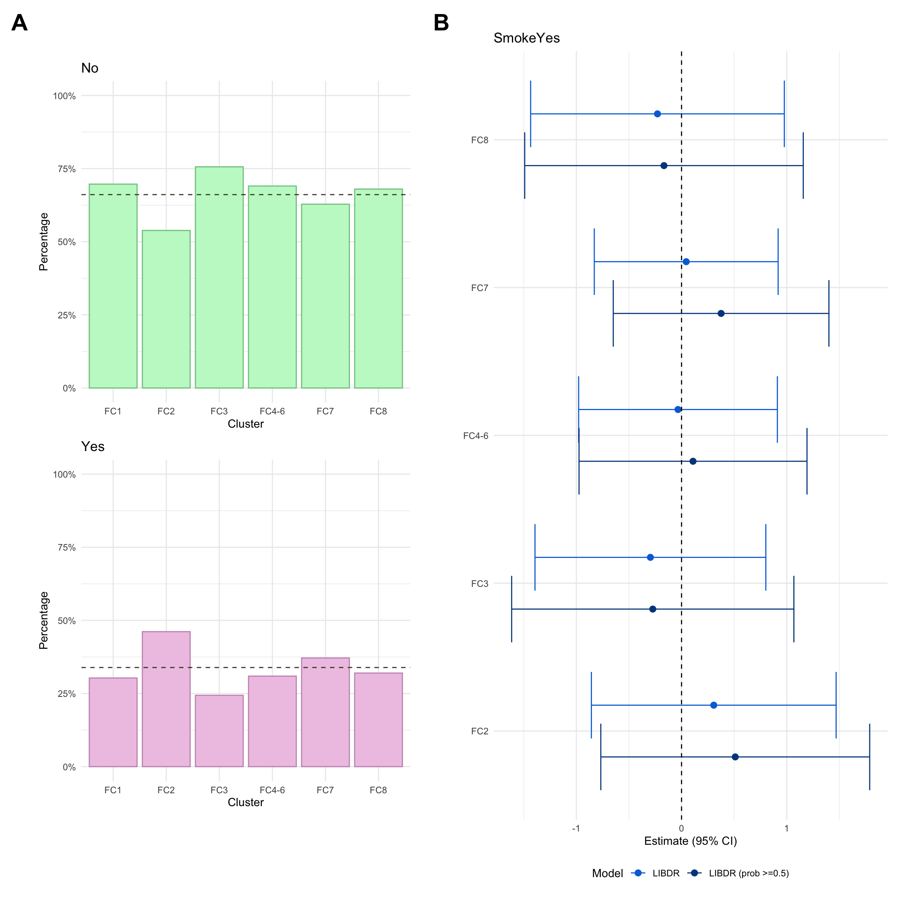

set.seed(123)if(file.exists("/.dockerenv")){# Check if running in Docker# Assume igmm/cvallejo-predicct/libdr/ is passed to the data volumeprefix<-"data/"}else{# Assume running outside of a Docker container and the IGC(/IGMM) datastore is# mounted at /Volumesprefix<-"/Volumes/igmm/cvallejo-predicct/libdr/"}###########################-- Packages --###########################library(tidyverse)library(dplyr)# Support package (source found in libdr/)library(libdr)## Modelling ##library(lcmm)library(nnet)# Multinomial logistic regression## Survival analysis ##library(survival)library(survminer)## Presentation ##library(patchwork)library(pander)library(viridis)dict<-readRDS(paste0(prefix, "processed/dict.RDS"))fcal<-readRDS(paste0(prefix, "processed/fcal.RDS"))model.fc<-readRDS(paste0(prefix, "/cache/fcal/ncs/fcal-8.RDS"))crp<-readRDS(paste0(prefix, "processed/crp.RDS"))crp.median<-readRDS(paste0(prefix, "processed/median-crp.RDS"))model.crp<-readRDS(paste0(prefix, "cache/crp-ma/crp-8.RDS"))dk<-read.csv(paste0(prefix,"Denmark/2024-12-13/Fcal_association_tests_merge4_6.csv"), sep =";")dk<-dk%>%mutate( Var1 =plyr::mapvalues(Var1, from =paste0("FC", seq(1, 6)), to =c("FC1","FC2","FC3","FC4-6","FC7","FC8")), Var2 =plyr::mapvalues(Var2, from =c("diag_age","final_diagUC","sexM"), to =c("age","diagnosisUlcerative Colitis","sexMale")))dk.fc.cd<-read.csv(paste0(prefix,"Denmark/2024-12-13/Fcal_association_tests_merge4_6_CD.csv"), sep =";")dk.fc.cd<-dk.fc.cd%>%mutate( Var1 =plyr::mapvalues(Var1, from =paste0("FC", seq(1, 6)), to =c("FC1","FC2","FC3","FC4-6","FC7","FC8")), Var2 =plyr::mapvalues(Var2, from =c("diag_age","sexM"), to =c("age","sexMale")))dk.fc.uc<-read.csv(paste0(prefix,"Denmark/2024-12-13/Fcal_association_tests_merge4_6_UC.csv"), sep =";")dk.fc.uc<-dk.fc.uc%>%mutate( Var1 =plyr::mapvalues(Var1, from =paste0("FC", seq(1, 6)), to =c("FC1","FC2","FC3","FC4-6","FC7","FC8")), Var2 =plyr::mapvalues(Var2, from =c("diag_age","sexM"), to =c("age","sexMale")))dk.crp<-read.csv(paste0(prefix,"Denmark/2024-12-13/CRP_association_tests.csv"), sep =";")dk.crp<-dk.crp%>%mutate(Var2 =plyr::mapvalues(Var2, from =c("diag_age","final_diagUC","sexM"), to =c("age","diagnosisUlcerative Colitis","sexMale")))
This page explores potential associations between information available at diagnosis, or shortly thereafter, and cluster membership. A descriptive analysis of baseline variables in described in a previous page.
For univariate analyses, continuous data have been analysed via ANOVA, and categorical data have been analysed using chi-squared or Fisher’s exact test as appropriate. Time-to-event data have been analysed using log-rank tests of Kaplan-Meier curves.
Multivariate analyses were also performed to potentially adjust for confounding factors.
As faecal calprotectin (FC) and C-reactive protein (CRP) were analysed independently, this page is split into FC and CRP sections.
Faecal calprotectin analysis
Merge subject-level metadata with model-derived quantities
Here, we create a data frame that combines individual-level information (e.g. age at diagnosis, sex) with model-derived quantities, such as the posterior probabilities of class assignment. To facilitate visualisation, we also create discretised versions for some variables.
Uncertainty cluster assignment probabilities
First, we calculate the proportion of individuals assigned to each cluster with probability above 0.5.
Code
p1<-myDF.fc%>%group_by(class_order_original)%>%summarise( prop50 =100*mean(probmax_original>0.5), prop75 =100*mean(probmax_original>0.75))%>%ggplot(aes(x =class_order_original, y =prop50))+ylim(c(0, 100))+xlab("Assigned cluster")+ylab("% assigned with prob > 0.5")+geom_bar(stat ="identity", fill ="#F9DC5C", color ="#C6AB00")+theme_minimal()p1
Next, we calculate average posterior probabilities of cluster assignment.
Figure 1 shows how cluster assignment probabilities change as follow-up for subjects increases. As one would expect, probabilities typically increase as as follow-up increases. This relationship appears to depend upon when the mean trajectory for the assigned cluster substantially differs from the other clusters. FC8 shows high posterior probabilities with even short follow-up as this is the only cluster with low FC at diagnosis. However, longer follow-ups are required to distinguish other clusters. For example, individuals assigned to FC6 that have a short follow-up (< 4 years from diagnosis) have, on average, a high probability of being assigned to FC3 instead ( versus ). This is not unexpected, as FC3 and FC6 share similar patterns within the first 2 years.
Code
# Assign level order otherwise alphanumerical order used# and add sample sizes to labelsmyDF.fc_means<-myDF.fc_means%>%mutate( prob_order_original =factor(prob_order_original, levels =paste0("prob_order_original_",1:8), labels =paste0("FC", seq(1, 8))), class_order_original =factor(class_order_original, levels =paste0("FC", 1:8), labels =paste0("Assigned to FC", 1:8, "\n n = ",as.vector(table(myDF.fc$class_order_original)))))fc_fup<-myDF.fc_means%>%ggplot(aes(fill =prob_order_original, y =value, x =followup_cut))+geom_bar(position ="fill", stat ="identity")+facet_wrap(.~class_order_original, ncol =4)+theme_minimal()+theme( legend.title =element_text(hjust =0.5), strip.background =element_rect( color ="lightgray", linewidth =1.5, linetype ="solid"))+labs( x ="Follow-up cutoff (years)", y ="", fill ="Mean posterior\nprobability of\ncluster assignment")+scale_fill_viridis_d(option ="inferno")fc_fupggsave("plots/fc-prob-fup.png", fc_fup, width =11, height =8, units ="in")ggsave("plots/fc-prob-fup.pdf", fc_fup, width =11, height =8, units ="in")
Figure 1: Demonstration of how mean posterior probabilities of cluster assignment for subjects changes based upon follow-up and assigned cluster.
Associations with respect to cluster assignments
This section displays descriptive plots to summarize marginal associations between cluster assignments and individual-level covariates. We also explore univariate and multivariate associations with respect to cluster assignment using multinomial logistic regression. As a sensitivity analysis, we also consider restricting the analysis to only consider individuals whose class assignment was less uncertain (with posterior probability > 0.5).
For all individuals
Code
p_diagnosis_all<-myDF.fc%>%plotCat("diagnosis", class ="class_order")p_sex_all<-myDF.fc%>%plotCat("sex", class ="class_order")p_age_all<-myDF.fc%>%ggplot(aes(x =class_order, y =age))+geom_violin(fill ="#5DB7DE", color ="#434371")+geom_boxplot(width =0.1, color ="black", alpha =0.2)+theme_minimal()+xlab("Cluster")+ylab("Age at diagnosis")p_mlr_all<-myDF.fc%>%mutate(class_order =relevel(class_order, ref ="FC1"))%>%mlrPlot(var =c("diagnosis", "age", "sex"), class ="class_order")temp.1<-myDF.fc%>%filter(class_order=="FC1")temp.2<-myDF.fc%>%filter(class_order!="FC1")perc.fc1<-round(sum(temp.1$diagnosis=="Crohn's Disease")/nrow(temp.1)*100,1)perc.rest<-round(sum(temp.2$diagnosis=="Crohn's Disease")/nrow(temp.2)*100,1)
Here, we consider associations with respect to information available at diagnosis: age, sex and IBD type.
62.9% of subjects in FC1 have Crohn’s disease whilst 50.9% of subjects in the other clusters have Crohn’s disease.
p_mlr_all<-myDF.fc%>%mutate(class_order =relevel(class_order, ref ="FC1"))%>%mlrPlot( var =c("diagnosis", "age", "sex"), class ="class_order", extern =dk)p<-(wrap_elements(p_age_all)+p_mlr_all$plot_everything$age&theme(legend.position ="none"))/(wrap_elements(p_sex_all)+p_mlr_all$plot_everything$sexMale+plot_layout(guides ="collect")&theme(legend.position ="bottom"))+plot_annotation(tag_levels ="A")+plot_layout(widths =c(1, 1))&theme(plot.tag =element_text(face ="bold", size =22))ggsave("plots/associations/fc-sex-age.pdf",p, width =12, height =12, units ="in")print(p)
Crohn’s disease only
For CD patients, we also consider additional phenotyping information. This includes the following information:
Smoking
This is recorded as a binary (Yes/No) variable and is primarily based on self-reporting. As such, it may not necessarily reflect true smoking status. Smoking was missing for approximately 5% of CD patients in the FC cohort.
Montreal location
Montreal location refers to where gastrointestinal inflammation is present and is categorised as:
L1: Ileal, limited to the ileum which is the final segment of the small intestine.
L2: Colonic, limited to the colon/large intestine.
L3: Ileocolonic, inflammation is present in both the ileum and colon.
Montreal location was missing for approximately 1% of CD patients in the FC cohort.
Montreal behaviour
Montreal behaviour describes another clinical phenotype and is defined as follows:
B1: Inflammatory, in other words non-stricturing and non-penetrating
B2: Stricturing, where the formation of fibrosis leads to the narrowing of the intestine.
B3: Penetrating, where the inflammation causes the formation of fistulas or abscesses.
Due to small numbers, B2 and B3 are merged into a single group (complicated CD) when analysing Montreal behaviour.
Code
myDF.fc<-myDF.fc%>%mutate(Behaviour_merged =plyr::mapvalues(Behaviour, from =c("B1", "B2", "B3", NA), to =c("B1", "B2 or B3", "B2 or B3", NA)))
Montreal behaviour was missing for approximately 2% of CD patients in the FC cohort.
Upper GI inflammation
Upper GI inflammation refers to any gastrointestinal inflammation further up than the ileum. Usually, upper inflammation is considered a modifier for Montreal location and is denoted L4. Upper GI inflammation (L4) was missing for a high proportion of CD individuals in the FC cohort (approx 33%. This is because the required investigations are only carried out where upper GI inflammation is suspected. As such, we have manually mapped missing L4 values as “No” (i.e. no upper GI inflammation for the associated patients).
Perianal disease is considered a modifier for Montreal behaviour and is a severe complication of Crohn’s disease involving inflammation around the anus.
Perianal disease status was missing for approximately 1% of CD patients in the FC cohort.
NOTE: For the purposes of the multinomial logistic regression model, individuals with missing values in any of these variables will be excluded. For consistency, such individuals will also be excluded from the univariate summary plots.
For this purpose, we create a missingness indicator (missingN_cd) which will facilitate the application of such filter.
The additional phenotyping information available for UC patients consists of:
Smoking
This is defined in the same way as for CD patients.
Smoking was missing for approximately 6% of UC patients in the FC cohort.
Extent
NOTE: As for CD cases, individuals with missing values in any of these variables will be excluded from the association analysis. For consistency, such individuals will also be excluded from the univariate summary plots.
For this purpose, we create a missingness indicator (missingN_uc) which will facilitate the application of such filter.
p_sex_uc<-myDF.fc%>%filter(diagnosis=="Ulcerative Colitis")%>%filter(missingN_uc==0)%>%plotCat("sex", class ="class_order")p_age_uc<-myDF.fc%>%filter(diagnosis=="Ulcerative Colitis")%>%filter(missingN_uc==0)%>%ggplot(aes(x =class_order, y =age))+geom_violin(fill ="#5DB7DE", color ="#434371")+geom_boxplot(width =0.1, color ="black", alpha =0.2)+theme_minimal()+xlab("Cluster")+ylab("Age at diagnosis")p_smoke_uc<-myDF.fc%>%filter(diagnosis=="Ulcerative Colitis")%>%filter(missingN_uc==0)%>%mutate(Smoke =ifelse(!is.na(Smoke), Smoke, "Missing"))%>%plotCat("Smoke", class ="class_order")p_extent_uc<-myDF.fc%>%filter(diagnosis=="Ulcerative Colitis")%>%filter(missingN_uc==0)%>%mutate(Extent =ifelse(!is.na(Extent), Extent, "Missing"))%>%plotCat("Extent", class ="class_order")p_mlr_uc<-myDF.fc%>%filter(diagnosis=="Ulcerative Colitis")%>%filter(missingN_uc==0)%>%mutate(class_order =relevel(class_order, ref ="FC1"))%>%mlrPlot( var =c("age", "sex", "Smoke", "Extent"), class ="class_order", extern =dk.fc.uc)
Warning: Removed 1 row containing missing values or values outside the scale range
(`geom_point()`).
Removed 1 row containing missing values or values outside the scale range
(`geom_point()`).

Note that, due to small counts of extent E1 in cluster FC3, the model fitted after excluding those with low probability of cluster assignment was subject to numerical issues (complete separation). As such, the associated estimates are excluded from the plot.
`summarise()` has grouped output by 'class_aux'. You can override using the
`.groups` argument.
class_aux
Extent
count
percentage
3
E1
1
2.439024
3
E2
21
51.219512
3
E3
19
46.341463
Other
E1
45
14.240506
Other
E2
129
40.822785
Other
E3
142
44.936709
Advanced therapy use
Summary statistics of AT use
Here, we focus on AT therapy within the observation period (i.e. seven years since diagnosis). Overall, we observe significant differences in AT across clusters. In particular, after adjusting for age and sex, AT was significantly lower in FC2.
Code
myDF.fc<-myDF.fc%>%mutate(AT_7Y =ifelse(AT==1&AT_line_1<=7, 1, 0))p_AT<-myDF.fc%>%mutate(AT_7Y =factor(AT_7Y))%>%plotCat("AT_7Y", class ="class_order")p_AT_mlr<-myDF.fc%>%mutate(AT_7Y =factor(AT_7Y))%>%mutate(class_order_original =relevel(class_order_original, ref ="FC1"))%>%mlrPlot( var =c("age", "sex", "AT_7Y"), class ="class_order_original")wrap_elements(p_AT)+p_AT_mlr$plot_both$AT
p_AT_1Y<-myDF.fc%>%mutate(AT_1Y =factor(AT_1Y))%>%plotCat("AT_1Y", class ="class_order_original")p_AT_1Y_cd<-myDF.fc%>%subset(diagnosis=="Crohn's Disease")%>%plotCat("AT_1Y", class ="class_order_original")p_AT_1Y_cd<-myDF.fc%>%subset(diagnosis=="Ulcerative Colitis")%>%plotCat("AT_1Y", class ="class_order_original")
We also generate a censored version for AT_1Y where lack of AT is treated as a right censored observation at seven years.
At present, we cannot show cumulative advanced therapy usage in this document as there are fewer than five subjects within at least one cluster-IBD type stratum. In the meantime, it is possible to view these plots in our manuscript which has digitally removed any strata with fewer than five subjects.
Code
km.df<-data.frame( time =numeric(), cumhaz =numeric(), class =character(), diag =character())for(gin1:8){# Calculate cumulative patternstemp.cd<-myDF.fc%>%filter(class_order_original==paste0("FC", g))%>%filter(diagnosis=="Crohn's Disease")temp.uc<-myDF.fc%>%filter(class_order_original==paste0("FC", g))%>%filter(diagnosis=="Ulcerative Colitis")km<-survfit(Surv(AT_line_1_cens, AT_7Y)~1, data =temp.cd)km.df<-rbind(km.df,data.frame( time =km$time, cumhaz =1-km$surv, class =paste0("FC",g,", CD=",nrow(temp.cd),"; UC=",nrow(temp.uc)), diag ="Crohn's disease"))km<-survfit(Surv(AT_line_1_cens, AT_7Y)~1, data =temp.uc)km.df<-rbind(km.df,data.frame( time =km$time, cumhaz =1-km$surv, class =paste0("FC",g,", CD=",nrow(temp.cd),"; UC=",nrow(temp.uc)), diag ="Ulcerative colitis"))temp.all<-myDF.fc%>%filter(class_order_original==paste0("FC", g))km<-survfit(Surv(AT_line_1_cens, AT_7Y)~1, data =temp.all)km.df<-rbind(km.df,data.frame( time =km$time, cumhaz =1-km$surv, class =paste0("FC",g,", CD=",nrow(temp.cd),"; UC=",nrow(temp.uc)), diag ="All"))}p1<-km.df%>%subset(diag!="All")%>%ggplot(aes(x =time, y =cumhaz))+geom_line(aes(color =diag), lty =1, lwd =1.2)+facet_wrap(~class, ncol =2)+theme_minimal()+scale_y_continuous(labels =scales::percent, limits =c(0, 0.8))+labs( x ="Time (years)", y ="% of subjects receiving an advanced therapy", color ="IBD type")+theme(legend.position ="bottom")# p1ggsave("paper/Figure-3.pdf",p1, width =8*3/4, height =12*3/4, units ="in")ggsave("paper/Figure-3.png",p1, width =8*3/4, height =12*3/4, units ="in")
`summarise()` has grouped output by 'class'. You can override using the
`.groups` argument.
Cluster
Diagnosis
Total percentage
FC1
Crohn’s disease
46.6
FC1
Ulcerative colitis
32.4
FC2
Crohn’s disease
17.6
FC2
Ulcerative colitis
11.5
FC3
Crohn’s disease
40.7
FC3
Ulcerative colitis
39.1
FC4
Crohn’s disease
50.0
FC4
Ulcerative colitis
33.3
FC5
Crohn’s disease
60.7
FC5
Ulcerative colitis
23.5
FC6
Crohn’s disease
60.0
FC6
Ulcerative colitis
38.9
FC7
Crohn’s disease
55.1
FC7
Ulcerative colitis
24.0
FC8
Crohn’s disease
56.8
FC8
Ulcerative colitis
37.9
C-reactive protein analysis
Merge subject-level metadata with model-derived quantities
Here, we create a data.frame that combines individual-level information (e.g. age at diagnosis, sex) with model-derived quantities, such as the posterior probabilities of class assignment. To facilitate visualisation, we also create discretised versions for some variables.
Figure 1 shows how cluster assignment probabilities change as follow-up for subjects increases. As one would expect, probabilities typically increase as as follow-up increases. This relationship appears to depend upon when the mean trajectory for the assigned cluster substantially differs from the other clusters. FC8 shows high posterior probabilities with even short follow-up as this is the only cluster with low FC at diagnosis. However, longer follow-ups are required to distinguish other clusters. For example, individuals assigned to FC6 that have a short follow-up (< 4 years from diagnosis) have, on average, a high probability of being assigned to FC3 instead ( versus ). This is not unexpected, as FC3 and FC6 share similar patterns within the first 2 years.
Code
# Assign level order otherwise alphanumerical order used# and add sample sizes to labelsmyDF.crp_means<-myDF.crp_means%>%mutate( prob_order =factor(prob_order, levels =c(paste0("prob_order", 1:8)), labels =c(paste0("CRP", 1:8))), class_order =factor(class_order, levels =paste0("CRP", 1:8), labels =paste0("Assigned to CRP", 1:8, "\n n = ",as.vector(table(myDF.crp$class_order)))))crp_fup<-myDF.crp_means%>%ggplot(aes(fill =prob_order, y =value, x =followup_cut))+geom_bar(position ="fill", stat ="identity")+facet_wrap(.~class_order, ncol =4)+theme_minimal()+theme( legend.title =element_text(hjust =0.5), strip.background =element_rect( color ="lightgray", linewidth =1.5, linetype ="solid"))+labs( x ="Follow-up cutoff (years)", y ="", fill ="Mean posterior\nprobability of\ncluster assignment")+scale_fill_viridis_d(option ="D")crp_fupggsave("plots/crp-prob-fup.png", crp_fup, width =11, height =8, units ="in")ggsave("plots/crp-prob-fup.pdf", crp_fup, width =11, height =8, units ="in")p<-fc_fup/crp_fup+plot_annotation(tag_levels ="A")&theme( plot.tag =element_text(size =20, face ="bold"), legend.title =element_text(size =14), legend.text =element_text(size =12))ggsave("plots/prob-fup.pdf",p, width =11*3/4, height =16*3/4, units ="in")ggsave("plots/prob-fup.png",p, width =11*3/4, height =16*3/4, units ="in")
Figure 2: Demonstration of how mean posterior probabilities of cluster assignment for subjects changes based upon follow-up and assigned cluster.
Associations with respect to cluster assignments
This section displays descriptive plots to summarize marginal associations between cluster assignments and individual-level covariates. We also explore univariate and multivariate associations with respect to cluster assignment using multinomial logistic regression. As a sensitivity analysis, we also consider restricting the analysis to only consider individuals whose class assignment was less uncertain (with posterior probability > 0.5).
For all individuals
Here, we consider associations with respect to information available at diagnosis: age, sex and IBD type.
Code
p_diagnosis_all<-myDF.crp%>%plotCat("diagnosis", class ="class_order")p_sex_all<-myDF.crp%>%plotCat("sex", class ="class_order")p_age_all<-myDF.crp%>%ggplot(aes(x =class_order, y =age))+geom_violin(fill ="#5DB7DE", color ="#434371")+geom_boxplot(width =0.1, color ="black", alpha =0.2)+theme_minimal()+xlab("Cluster")+ylab("Age at diagnosis")p_mlr_all<-myDF.crp%>%mutate(class_order =relevel(class_order, ref ="CRP1"))%>%mlrPlot(var =c("diagnosis", "age", "sex"), class ="class_order")
For CD patients, we also consider additional phenotyping information. This includes the following information:
Smoking
This is recorded as a binary (Yes/No) variable and is primarily based on self-reporting. As such, it may not necessarily reflect true smoking status. Smoking was missing for approximately 6% of CD patients in the FC cohort.
Montreal location
Montreal location refers to where gastrointestinal inflammation is present and is categorised as:
L1: Ileal, limited to the ileum which is the final segment of the small intestine.
L2: Colonic, limited to the colon/large intestine.
L3: Ileocolonic, inflammation is present in both the ileum and colon.
Montreal location was missing for approximately 3% of CD patients in the FC cohort.
Montreal behaviour
Montreal behaviour describes another clinical phenotype and is defined as follows:
B1: Inflammatory, in other words non-stricturing and non-penetrating
B2: Stricturing, where the formation of fibrosis leads to the narrowing of the intestine.
B3: Penetrating, where the inflammation causes the formation of fistulas or abscesses.
Due to small numbers, B2 and B3 are merged into a single group (complicated CD) when analysing Montreal behaviour.
Code
myDF.crp<-myDF.crp%>%mutate(Behaviour_merged =plyr::mapvalues(Behaviour, from =c("B1", "B2", "B3", NA), to =c("B1", "B2 or B3", "B2 or B3", NA)))
Montreal behaviour was missing for approximately 3% of CD patients in the FC cohort.
Upper GI inflammation
Upper GI inflammation refers to any gastrointestinal inflammation further up than the ileum. Usually, upper inflammation is considered a modifier for Montreal location and is denoted L4. Upper GI inflammation (L4) was missing for a high proportion of CD individuals in the FC cohort (approx 3% This is because the required investigations are only carried out where upper GI inflammation is suspected. As such, we have manually mapped missing L4 values as “No” (i.e. no upper GI inflammation for the associated patients).
Perianal disease is considered a modifier for Montreal behaviour and is a severe complication of Crohn’s disease involving inflammation around the anus.
Perianal disease status was missing for approximately 2% of CD patients in the FC cohort.
NOTE: For the purposes of the multinomial logistic regression model, individuals with missing values in any of these variables will be excluded. For consistency, such individuals will also be excluded from the univariate summary plots.
For this purpose, we create a missingness indicator (missingN_cd) which will facilitate the application of such filter.
p_sex_cd<-myDF.crp%>%filter(diagnosis=="Crohn's Disease")%>%filter(missingN_cd==0)%>%plotCat("sex", class ="class_order")p_age_cd<-myDF.crp%>%filter(diagnosis=="Crohn's Disease")%>%filter(missingN_cd==0)%>%ggplot(aes(x =class_order, y =age))+geom_violin(fill ="#5DB7DE", color ="#434371")+geom_boxplot(width =0.1, color ="black", alpha =0.2)+theme_minimal()+xlab("Cluster")+ylab("Age at diagnosis")p_smoke_cd<-myDF.crp%>%filter(diagnosis=="Crohn's Disease")%>%filter(missingN_cd==0)%>%mutate(Smoke =ifelse(!is.na(Smoke), Smoke, "Missing"))%>%plotCat("Smoke", class ="class_order")p_location_cd<-myDF.crp%>%filter(diagnosis=="Crohn's Disease")%>%filter(missingN_cd==0)%>%mutate(Location =ifelse(!is.na(Location), Location, "Missing"))%>%plotCat("Location", class ="class_order")p_behaviour_cd<-myDF.crp%>%filter(diagnosis=="Crohn's Disease")%>%filter(missingN_cd==0)%>%mutate(Behaviour =ifelse(!is.na(Behaviour_merged),Behaviour_merged,"Missing"))%>%plotCat("Behaviour", class ="class_order")p_L4_cd<-myDF.crp%>%filter(diagnosis=="Crohn's Disease")%>%filter(missingN_cd==0)%>%mutate(L4 =ifelse(!is.na(L4), L4, "Missing"))%>%plotCat("L4", class ="class_order")p_perianal_cd<-myDF.crp%>%filter(diagnosis=="Crohn's Disease")%>%filter(missingN_cd==0)%>%mutate(Perianal =ifelse(!is.na(Perianal), Perianal, "Missing"))%>%plotCat("Perianal", class ="class_order")p_mlr_cd<-myDF.crp%>%filter(diagnosis=="Crohn's Disease")%>%filter(missingN_cd==0)%>%mutate(class_order =relevel(class_order, ref ="CRP1"))%>%mlrPlot( var =c("age", "sex", "Smoke", "Location", "L4", "Behaviour_merged"), class ="class_order")
`summarise()` has grouped output by 'class_aux'. You can override using the
`.groups` argument.
class_aux
Smoke
count
percentage
1
No
125
73.09942
1
Yes
46
26.90058
8
No
29
46.03175
8
Yes
34
53.96825
Other
No
323
63.33333
Other
Yes
187
36.66667
Ulcerative Colitis only
The additional phenotyping information available for UC patients consists of:
Smoking
This is defined in the same way as for CD patients.
Smoking was missing for approximately 8% of UC patients in the FC cohort.
Extent
NOTE: As for CD cases, individuals with missing values in any of these variables will be excluded from the association analysis. For consistency, such individuals will also be excluded from the univariate summary plots.
For this purpose, we create a missingness indicator (missingN_uc) which will facilitate the application of such filter.
p_sex_uc<-myDF.crp%>%filter(diagnosis=="Ulcerative Colitis")%>%filter(missingN_uc==0)%>%plotCat("sex", class ="class_order")p_age_uc<-myDF.crp%>%filter(diagnosis=="Ulcerative Colitis")%>%filter(missingN_uc==0)%>%ggplot(aes(x =class_order, y =age))+geom_violin(fill ="#5DB7DE", color ="#434371")+geom_boxplot(width =0.1, color ="black", alpha =0.2)+theme_minimal()+xlab("Cluster")+ylab("Age at diagnosis")p_smoke_uc<-myDF.crp%>%filter(diagnosis=="Ulcerative Colitis")%>%filter(missingN_uc==0)%>%mutate(Smoke =ifelse(!is.na(Smoke), Smoke, "Missing"))%>%plotCat("Smoke", class ="class_order")p_extent_uc<-myDF.crp%>%filter(diagnosis=="Ulcerative Colitis")%>%filter(missingN_uc==0)%>%mutate(Extent =ifelse(!is.na(Extent), Extent, "Missing"))%>%plotCat("Extent", class ="class_order")p_mlr_uc<-myDF.crp%>%filter(diagnosis=="Ulcerative Colitis")%>%filter(missingN_uc==0)%>%mutate(class_order =relevel(class_order, ref ="CRP1"))%>%mlrPlot( var =c("age", "sex", "Smoke", "Extent"), class ="class_order")
`summarise()` has grouped output by 'class_aux'. You can override using the
`.groups` argument.
class_aux
Extent
count
percentage
Other
E1
147
19.24084
Other
E2
311
40.70681
Other
E3
306
40.05236
Advanced therapy use
Overall cluster-specific trajectories
Here, we extract overall cluster-specific trajectories as these will be used for visualisation purposes in order to better understand patterns of AT use. Note that model outputs do not match the reordered clusters (based on cumulative inflammation) used throughout this report. As such, we use title.mapping to re-order the trajectories when these are plotted.
Code
time.pred<-seq(0, 7, by =0.01)pred.crp.df<-data.frame( crp_time =c(time.pred, time.pred), diagnosis =c(rep("Crohn's Disease", length(time.pred)),rep("Ulcerative Colitis", length(time.pred))))pred.crp.df.update<-lcmm::predictY(model.crp,pred.crp.df, var.time ="crp_time", draws =TRUE)$predpred<-predictY(model.crp,pred.crp.df, var.time ="crp_time", draws =TRUE)$predpred<-as.data.frame(pred[seq_along(time.pred), ])pred$time<-time.predylimit<-log(2500)title.mapping<-c(2, 3, 1, 4, 5, 7, 6, 8)
Summary statistics of AT use
Overall, we observe significant differences in AT across clusters. In particular, after adjusting for age and sex, AT was significantly lower in FC2.
p_AT_1Y<-myDF.crp%>%mutate(AT_1Y =factor(AT_1Y))%>%plotCat("AT_1Y", class ="class_order")p_AT_1Y_cd<-myDF.crp%>%subset(diagnosis=="Crohn's Disease")%>%plotCat("AT_1Y", class ="class_order")p_AT_1Y_cd<-myDF.crp%>%subset(diagnosis=="Ulcerative Colitis")%>%plotCat("AT_1Y", class ="class_order")
We also generate a censored version for AT_1Y where lack of AT is treated as a right censored observation at seven years.
At present, we cannot show cumulative advanced therapy usage in this document as there are fewer than five subjects within at least one cluster-IBD type stratum. In the meantime, it is possible to view these plots in our manuscript which has digitally removed any strata with fewer than five subjects.
Code
km.df<-data.frame( time =numeric(), cumhaz =numeric(), class =character(), diag =character())for(gin1:8){# Calculate cumulative patternstemp.cd<-myDF.crp%>%filter(class_order==paste0("CRP", g))%>%filter(diagnosis=="Crohn's Disease")temp.uc<-myDF.crp%>%filter(class_order==paste0("CRP", g))%>%filter(diagnosis=="Ulcerative Colitis")km<-survfit(Surv(AT_line_1_cens, AT_7Y)~1, data =temp.cd)km.df<-rbind(km.df,data.frame( time =km$time, cumhaz =1-km$surv, class =paste0("CRP",g,", CD=",nrow(temp.cd),"; UC=",nrow(temp.uc)), diag ="Crohn's disease"))km<-survfit(Surv(AT_line_1_cens, AT_7Y)~1, data =temp.uc)km.df<-rbind(km.df,data.frame( time =km$time, cumhaz =1-km$surv, class =paste0("CRP",g,", CD=",nrow(temp.cd),"; UC=",nrow(temp.uc)), diag ="Ulcerative colitis"))temp.all<-myDF.crp%>%filter(class_order==paste0("CRP", g))km<-survfit(Surv(AT_line_1_cens, AT_7Y)~1, data =temp.all)km.df<-rbind(km.df,data.frame( time =km$time, cumhaz =1-km$surv, class =paste0("CRP",g,", CD=",nrow(temp.cd),"; UC=",nrow(temp.uc)), diag ="All"))}p1<-km.df%>%subset(diag!="All")%>%ggplot(aes(x =time, y =cumhaz))+geom_line(aes(color =diag), lty =1, lwd =1.2)+facet_wrap(~class, ncol =2)+theme_minimal()+scale_y_continuous(labels =scales::percent, limits =c(0, 0.7))+labs( x ="Time (years)", y ="% of subjects receiving an advanced therapy", color ="IBD type")+theme(legend.position ="bottom")# p1ggsave("paper/CRP-AT.pdf", p1, width =8*3/4, height =12*3/4, units ="in")ggsave("paper/CRP-AT.png", p1, width =8*3/4, height =12*3/4, units ="in")
---title: "Associations with cluster membership"author: - name: "Nathan Constantine-Cooke" corresponding: true url: https://scholar.google.com/citations?user=2emHWR0AAAAJ&hl=en&oi=ao affiliations: - ref: CGEM - ref: HGU - name: "Catalina A. Vallejos" url: https://scholar.google.com/citations?user=lkdrwm0AAAAJ&hl=en&oi=ao affiliations: - ref: HGU---## Introduction```{R Setup}#| message: falseset.seed(123)if (file.exists("/.dockerenv")) { # Check if running in Docker # Assume igmm/cvallejo-predicct/libdr/ is passed to the data volume prefix <- "data/"} else { # Assume running outside of a Docker container and the IGC(/IGMM) datastore is # mounted at /Volumes prefix <- "/Volumes/igmm/cvallejo-predicct/libdr/"}###########################-- Packages --###########################library(tidyverse)library(dplyr)# Support package (source found in libdr/)library(libdr)## Modelling ##library(lcmm)library(nnet) # Multinomial logistic regression## Survival analysis ##library(survival)library(survminer)## Presentation ##library(patchwork)library(pander)library(viridis)dict <- readRDS(paste0(prefix, "processed/dict.RDS"))fcal <- readRDS(paste0(prefix, "processed/fcal.RDS"))model.fc <- readRDS(paste0(prefix, "/cache/fcal/ncs/fcal-8.RDS"))crp <- readRDS(paste0(prefix, "processed/crp.RDS"))crp.median <- readRDS(paste0(prefix, "processed/median-crp.RDS"))model.crp <- readRDS(paste0(prefix, "cache/crp-ma/crp-8.RDS"))dk <- read.csv( paste0( prefix, "Denmark/2024-12-13/Fcal_association_tests_merge4_6.csv" ), sep = ";")dk <- dk %>% mutate( Var1 = plyr::mapvalues(Var1, from = paste0("FC", seq(1, 6)), to = c( "FC1", "FC2", "FC3", "FC4-6", "FC7", "FC8" ) ), Var2 = plyr::mapvalues(Var2, from = c( "diag_age", "final_diagUC", "sexM" ), to = c( "age", "diagnosisUlcerative Colitis", "sexMale" ) ))dk.fc.cd <- read.csv( paste0( prefix, "Denmark/2024-12-13/Fcal_association_tests_merge4_6_CD.csv" ), sep = ";")dk.fc.cd <- dk.fc.cd %>% mutate( Var1 = plyr::mapvalues(Var1, from = paste0("FC", seq(1, 6)), to = c( "FC1", "FC2", "FC3", "FC4-6", "FC7", "FC8" ) ), Var2 = plyr::mapvalues(Var2, from = c( "diag_age", "sexM" ), to = c( "age", "sexMale" ) ))dk.fc.uc <- read.csv( paste0( prefix, "Denmark/2024-12-13/Fcal_association_tests_merge4_6_UC.csv" ), sep = ";")dk.fc.uc <- dk.fc.uc %>% mutate( Var1 = plyr::mapvalues(Var1, from = paste0("FC", seq(1, 6)), to = c( "FC1", "FC2", "FC3", "FC4-6", "FC7", "FC8" ) ), Var2 = plyr::mapvalues(Var2, from = c( "diag_age", "sexM" ), to = c( "age", "sexMale" ) ))dk.crp <- read.csv( paste0( prefix, "Denmark/2024-12-13/CRP_association_tests.csv" ), sep = ";")dk.crp <- dk.crp %>% mutate(Var2 = plyr::mapvalues(Var2, from = c( "diag_age", "final_diagUC", "sexM" ), to = c( "age", "diagnosisUlcerative Colitis", "sexMale" )))```This page explores potential associations between information available atdiagnosis, or shortly thereafter, and cluster membership. A descriptive analysisof baseline variables in described in a[previous page](../pre/baseline.qmd).For univariate analyses, continuous data have been analysed via ANOVA, andcategorical data have been analysed using chi-squared or Fisher's exact test asappropriate. Time-to-event data have been analysed using log-rank tests of Kaplan-Meier curves.Multivariate analyses were also performed to potentially adjust forconfounding factors. As faecal calprotectin (FC) and C-reactive protein (CRP) were analysedindependently, this page is split into FC and CRP sections. ## Faecal calprotectin analysis### Merge subject-level metadata with model-derived quantities```{r}myDF.fc <- fcal %>%group_by(ids) %>%summarise(n.total =n(),followup =max(calpro_time), ) %>%mutate(followup_cut =cut(followup, breaks =c(0, 2, 4, 6, 7)),n.total_cut =cut(n.total, breaks =c(0, 5, 10, 20, max(n.total))) )myDF.fc <-merge(myDF.fc, model.fc$pprob,by ="ids",all.x =FALSE,all.y =TRUE)myDF.fc <- myDF.fc %>%mutate(probmax =pmax( prob1, prob2, prob3, prob4, prob5, prob6, prob7, prob8 )) # , prob9, prob10))myDF.fc <-merge(myDF.fc, dict, by ="ids", all.x =TRUE, all.y =FALSE)myDF.fc <- myDF.fc %>%mutate(class_order = plyr::mapvalues( class,from =seq_len(8), to =c(7, 6, 4, 8, 1, 5, 2, 3) )) %>%mutate(class_order =factor( class_order,levels =1:8, labels =paste0("FC", 1:8) )) %>%mutate(prob_order1 = prob5, prob_order2 = prob7,prob_order3 = prob8, prob_order4 = prob3,prob_order5 = prob6, prob_order6 = prob2,prob_order7 = prob1, prob_order8 = prob4 )myDF.fc <- myDF.fc %>%mutate(class_order_original = class_order,prob_order_original_1 = prob_order1,prob_order_original_2 = prob_order2,prob_order_original_3 = prob_order3,prob_order_original_4 = prob_order4,prob_order_original_5 = prob_order5,prob_order_original_6 = prob_order6,prob_order_original_7 = prob_order7,prob_order_original_8 = prob_order8,probmax_original =pmax( prob_order1, prob_order2, prob_order3, prob_order4, prob_order5, prob_order6, prob_order7, prob_order8 ),class_order = plyr::mapvalues(class_order,from =c("FC5", "FC6", "FC7", "FC8"),to =c("FC4", "FC4", "FC5", "FC6") ),prob_order4 = prob_order4 + prob_order5 + prob_order6,prob_order5 = prob_order7,prob_order6 = prob_order8 ) %>%select(-prob_order7, -prob_order8) %>%mutate(probmax =pmax( prob_order1, prob_order2, prob_order3, prob_order4, prob_order5, prob_order6 ))newlabs <-c("FC1", "FC2", "FC3", "FC4-6", "FC7", "FC8")myDF.fc$class_order <-factor(myDF.fc$class_order,levels =paste0("FC", seq(1, 6)),labels = newlabs)```Here, we create a `data frame` that combines individual-level information(e.g. age at diagnosis, sex) with model-derived quantities, such as theposterior probabilities of class assignment. To facilitate visualisation, we also create discretised versions for some variables. ### Uncertainty cluster assignment probabilities First, we calculate the proportion of individuals assigned to each clusterwith probability above 0.5.```{r}p1 <- myDF.fc %>%group_by(class_order_original) %>%summarise(prop50 =100*mean(probmax_original >0.5),prop75 =100*mean(probmax_original >0.75) ) %>%ggplot(aes(x = class_order_original, y = prop50)) +ylim(c(0, 100)) +xlab("Assigned cluster") +ylab("% assigned with prob > 0.5") +geom_bar(stat ="identity", fill ="#F9DC5C", color ="#C6AB00") +theme_minimal()p1```Next, we calculate average posterior probabilities of cluster assignment. ```{r}myDF.fc_means <- myDF.fc %>%group_by(class_order_original, followup_cut) %>%summarise(across(starts_with("prob_order_original"),function(x) mean(x, na.rm =TRUE)),.groups ="drop" ) %>%pivot_longer(cols =starts_with("prob_order_original"),names_to ="prob_order_original")```@fig-fc-prob-fup shows how cluster assignment probabilities change as follow-upfor subjects increases. As one would expect, probabilities typically increase asas follow-up increases. This relationship appears to depend upon when the meantrajectory for the assigned cluster substantially differs from the otherclusters. FC8 shows high posterior probabilities with even short follow-up asthis is the only cluster with low FC at diagnosis. However, longer follow-ups are required to distinguish other clusters. For example, individualsassigned to FC6 that have a short follow-up (< 4 years from diagnosis) have, on average, a high probability of being assigned to FC3 instead (`r round(myDF.fc_means$value[myDF.fc_means$class_order == "FC6" & myDF.fc_means$followup_cut == "(0,4]" & myDF.fc_means$prob_order == "prob_order6"], 3)`versus`r round(myDF.fc_means$value[myDF.fc_means$class_order == "FC6" & myDF.fc_means$followup_cut == "(0,4]" & myDF.fc_means$prob_order == "prob_order3"], 3)`).This is not unexpected, as FC3 and FC6 share similar patterns within the first2 years. ```{R}#| label: fig-fc-prob-fup#| fig-cap: "Demonstration of how mean posterior probabilities of cluster assignment for subjects changes based upon follow-up and assigned cluster."#| column: body-outset#| fig-width: 11#| fig-height: 8# Assign level order otherwise alphanumerical order used# and add sample sizes to labelsmyDF.fc_means <- myDF.fc_means %>%mutate(prob_order_original =factor(prob_order_original,levels =paste0("prob_order_original_",1:8 ),labels =paste0("FC", seq(1, 8)) ),class_order_original =factor(class_order_original,levels =paste0("FC", 1:8),labels =paste0("Assigned to FC", 1:8, "\n n = ",as.vector(table(myDF.fc$class_order_original)) ) ) )fc_fup <- myDF.fc_means %>%ggplot(aes(fill = prob_order_original, y = value, x = followup_cut)) +geom_bar(position ="fill", stat ="identity") +facet_wrap(. ~ class_order_original, ncol =4) +theme_minimal() +theme(legend.title =element_text(hjust =0.5),strip.background =element_rect(color ="lightgray",linewidth =1.5,linetype ="solid" ) ) +labs(x ="Follow-up cutoff (years)",y ="",fill ="Mean posterior\nprobability of\ncluster assignment" ) +scale_fill_viridis_d(option ="inferno")fc_fupggsave("plots/fc-prob-fup.png", fc_fup, width =11, height =8, units ="in")ggsave("plots/fc-prob-fup.pdf", fc_fup, width =11, height =8, units ="in")```### Associations with respect to cluster assignmentsThis section displays descriptive plots to summarize marginal associationsbetween cluster assignments and individual-level covariates. We also explore univariate and multivariate associations with respect to cluster assignment using multinomial logistic regression. As a sensitivity analysis, we also consider restricting the analysis to only consider individuals whose class assignment was less uncertain (with posterior probability > 0.5).<!--- CAV: add here a table with summary statistics per cluster;include, for each cluster, the proportion of individuals assigned withprob > 0.5--->#### For all individuals```{r}#| column: page#| fig-width: 12#| fig-height: 12p_diagnosis_all <- myDF.fc %>%plotCat("diagnosis", class ="class_order")p_sex_all <- myDF.fc %>%plotCat("sex", class ="class_order")p_age_all <- myDF.fc %>%ggplot(aes(x = class_order, y = age)) +geom_violin(fill ="#5DB7DE", color ="#434371") +geom_boxplot(width =0.1, color ="black", alpha =0.2) +theme_minimal() +xlab("Cluster") +ylab("Age at diagnosis")p_mlr_all <- myDF.fc %>%mutate(class_order =relevel(class_order, ref ="FC1")) %>%mlrPlot(var =c("diagnosis", "age", "sex"), class ="class_order")temp.1<- myDF.fc %>%filter(class_order =="FC1")temp.2<- myDF.fc %>%filter(class_order !="FC1")perc.fc1 <-round(sum(temp.1$diagnosis =="Crohn's Disease") /nrow(temp.1) *100,1)perc.rest <-round(sum(temp.2$diagnosis =="Crohn's Disease") /nrow(temp.2) *100,1)```Here, we consider associations with respect to information available at diagnosis: age, sex and IBD type. `r perc.fc1`% of subjects in FC1 have Crohn's disease whilst `r perc.rest`% ofsubjects in the other clusters have Crohn's disease.```{R}#| column: page#| fig-width: 15#| fig-height: 12p <-wrap_elements(p_diagnosis_all) +wrap_elements(p_mlr_all$p_both$`diagnosisUlcerative Colitis`+ p_mlr_all$p_both$`diagnosisIBDU`+plot_layout(guides ="collect") &theme(legend.position ="bottom")) +plot_annotation(tag_levels ="A") +plot_layout(widths =c(1.25, 2)) &theme(plot.tag =element_text(face ="bold", size =22))ggsave("plots/associations/fc-diagnosis.pdf", p,width =15,height =12,units ="in",create.dir =TRUE)print(p)``````{R}#| echo: false# Used to combine with the Lothian datap <- dk %>%filter(Model %in%c("Multivariate", "Multivariate (prob >=0.5)")) %>%mutate(Model =factor(Model, levels =c("Multivariate (prob >=0.5)", "Multivariate"))) %>% libdr:::.plotCI("diagnosisUlcerative Colitis")ggsave("plots/associations/fc-diagnosis-dk-forest.pdf", p,width =15,height =12,units ="in",create.dir =TRUE)``````{R}#| column: page#| fig-width: 12#| fig-height: 12p_mlr_all <- myDF.fc %>%mutate(class_order =relevel(class_order, ref ="FC1")) %>%mlrPlot(var =c("diagnosis", "age", "sex"),class ="class_order",extern = dk )p <- (wrap_elements(p_age_all) + p_mlr_all$plot_everything$age &theme(legend.position ="none")) / (wrap_elements(p_sex_all) + p_mlr_all$plot_everything$sexMale +plot_layout(guides ="collect") &theme(legend.position ="bottom")) +plot_annotation(tag_levels ="A") +plot_layout(widths =c(1, 1)) &theme(plot.tag =element_text(face ="bold", size =22))ggsave("plots/associations/fc-sex-age.pdf", p,width =12,height =12,units ="in")print(p)```#### Crohn's disease onlyFor CD patients, we also consider additional phenotyping information. Thisincludes the following information:**Smoking**This is recorded as a binary (Yes/No) variable and is primarily based on self-reporting. As such, it may not necessarily reflect true smoking status.Smoking was missing for approximately `r round(mean(is.na(myDF.fc$Smoke[myDF.fc$diagnosis == "Crohn's Disease"])) * 100)`%of CD patients in the FC cohort. **Montreal location**Montreal location refers to where gastrointestinal inflammation is present andis categorised as:* L1: Ileal, limited to the ileum which is the final segment of the small intestine.* L2: Colonic, limited to the colon/large intestine.* L3: Ileocolonic, inflammation is present in both the ileum and colon.Montreal location was missing for approximately `r round(mean(is.na(myDF.fc$Location[myDF.fc$diagnosis == "Crohn's Disease"])) * 100)`%of CD patients in the FC cohort. **Montreal behaviour**Montreal behaviour describes another clinical phenotype and is defined asfollows:* B1: Inflammatory, in other words non-stricturing and non-penetrating* B2: Stricturing, where the formation of fibrosis leads to the narrowing of the intestine.* B3: Penetrating, where the inflammation causes the formation of fistulas or abscesses.Due to small numbers, B2 and B3 are merged into a single group (complicated CD) when analysing Montreal behaviour. ```{r}myDF.fc <- myDF.fc %>%mutate(Behaviour_merged = plyr::mapvalues(Behaviour,from =c("B1", "B2", "B3", NA),to =c("B1", "B2 or B3", "B2 or B3", NA) ))```Montreal behaviour was missing for approximately `r round(mean(is.na(myDF.fc$Behaviour[myDF.fc$diagnosis == "Crohn's Disease"])) * 100)`%of CD patients in the FC cohort. **Upper GI inflammation**Upper GI inflammation refers to any gastrointestinal inflammation further up thanthe ileum. Usually, upper inflammation is considered a _modifier_ for Montreallocation and is denoted L4. Upper GI inflammation (L4) was missing for a high proportion of CD individuals in the FC cohort (approx `r round(mean(is.na(myDF.fc$L4[myDF.fc$diagnosis == "Crohn's Disease"])) * 100)`%. This is because the required investigations are only carried out where upper GI inflammation is suspected. As such, we have manually mapped missing L4 values as "No" (i.e. no upper GI inflammation for the associated patients). ```{r}myDF.fc <- myDF.fc %>%mutate(L4 =ifelse(!is.na(L4), L4, "No"))```**Perianal disease**Perianal disease is considered a modifier for Montreal behaviour and is a severecomplication of Crohn's disease involving inflammation around the anus.Perianal disease status was missing for approximately `r round(mean(is.na(myDF.fc$Perianal[myDF.fc$diagnosis == "Crohn's Disease"])) * 100)`%of CD patients in the FC cohort. **NOTE: For the purposes of the multinomial logistic regression model, individuals with missing values in any of these variables will be excluded.For consistency, such individuals will also be excluded from the univariatesummary plots.**For this purpose, we create a missingness indicator (`missingN_cd`) whichwill facilitate the application of such filter. ```{r}myDF.fc <- myDF.fc %>%mutate(missingN_cd =is.na(Smoke) +is.na(Location) +is.na(L4) +is.na(Behaviour) +is.na(Perianal) )with(myDF.fc[myDF.fc$diagnosis =="Crohn's Disease", ], table(missingN_cd >0))```As shown above,`r sum(myDF.fc$missingN_cd[myDF.fc$diagnosis == "Crohn's Disease"] > 0)`subjects will be excluded hereafter. Here is the code to explore the associations:```{r}#| column: page#| fig-width: 12#| fig-height: 12p_sex_cd <- myDF.fc %>%filter(diagnosis =="Crohn's Disease") %>%filter(missingN_cd ==0) %>%plotCat("sex", class ="class_order")p_age_cd <- myDF.fc %>%filter(diagnosis =="Crohn's Disease") %>%filter(missingN_cd ==0) %>%ggplot(aes(x = class_order, y = age)) +geom_violin(fill ="#5DB7DE", color ="#434371") +geom_boxplot(width =0.1, color ="black", alpha =0.2) +theme_minimal() +xlab("Cluster") +ylab("Age at diagnosis")p_smoke_cd <- myDF.fc %>%filter(diagnosis =="Crohn's Disease") %>%filter(missingN_cd ==0) %>%mutate(Smoke =ifelse(!is.na(Smoke), Smoke, "Missing")) %>%plotCat("Smoke", class ="class_order")p_location_cd <- myDF.fc %>%filter(diagnosis =="Crohn's Disease") %>%filter(missingN_cd ==0) %>%mutate(Location =ifelse(!is.na(Location), Location, "Missing")) %>%plotCat("Location", class ="class_order")p_behaviour_cd <- myDF.fc %>%filter(diagnosis =="Crohn's Disease") %>%filter(missingN_cd ==0) %>%mutate(Behaviour =ifelse(!is.na(Behaviour_merged), Behaviour_merged,"Missing")) %>%plotCat("Behaviour", class ="class_order")p_L4_cd <- myDF.fc %>%filter(diagnosis =="Crohn's Disease") %>%filter(missingN_cd ==0) %>%mutate(L4 =ifelse(!is.na(L4), L4, "Missing")) %>%plotCat("L4", class ="class_order")p_perianal_cd <- myDF.fc %>%filter(diagnosis =="Crohn's Disease") %>%filter(missingN_cd ==0) %>%mutate(Perianal =ifelse(!is.na(Perianal), Perianal, "Missing")) %>%plotCat("Perianal", class ="class_order")p_mlr_cd <- myDF.fc %>%filter(diagnosis =="Crohn's Disease") %>%filter(missingN_cd ==0) %>%mutate(class_order =relevel(class_order, ref ="FC1")) %>%mlrPlot(var =c("age", "sex","Smoke", "Location", "L4", "Behaviour_merged", "Perianal" ),class ="class_order",extern = dk.fc.cd )``````{R}#| column: page#| fig-width: 12#| fig-height: 12(wrap_elements(p_age_cd) + p_mlr_cd$p_both$age) / (wrap_elements(p_sex_cd) + p_mlr_cd$p_both$sexMale) +plot_annotation(tag_levels ="A", title ="CD patients only")``````{R}p <- (p_age_cd +ylim(0, 90) +ggplot()) / (p_mlr_cd$plot_everything$age +ggplot()) +plot_layout(guides ="collect") &theme(legend.position ="bottom") &plot_annotation(tag_levels ="A") &theme(plot.tag =element_text(face ="bold", size =22))ggsave("plots/associations/fc-cd-age.pdf", p,width =12,height =12,units ="in")p <- (wrap_elements(p_sex_cd) +ggplot()) / (p_mlr_cd$plot_everything$sexMale +ggplot()) +plot_layout(guides ="collect") &theme(legend.position ="bottom") &plot_annotation(tag_levels ="A") &theme(plot.tag =element_text(face ="bold", size =22))ggsave("plots/associations/fc-cd-sex.pdf", p,width =12,height =12,units ="in")``````{R}#| column: page#| fig-width: 12#| fig-height: 12p_mlr_cd <- myDF.fc %>%filter(diagnosis =="Crohn's Disease") %>%filter(missingN_cd ==0) %>%mutate(class_order =relevel(class_order, ref ="FC1")) %>%mlrPlot(var =c("age", "sex","Smoke", "Location", "L4", "Behaviour_merged", "Perianal" ),class ="class_order" )p <-wrap_elements(p_smoke_cd) + (p_mlr_cd$p_both$SmokeYes &theme(legend.position ="bottom")) +plot_annotation(tag_levels ="A") &theme(plot.tag =element_text(face ="bold", size =22))ggsave("plots/associations/fc-cd-smoking.pdf", p,width =12,height =12,units ="in")p``````{R}#| column: page#| fig-width: 15#| fig-height: 12p <-wrap_elements(p_location_cd) +wrap_elements(p_mlr_cd$p_both$LocationL2 + p_mlr_cd$p_both$LocationL3 +plot_layout(guides ="collect") &theme(legend.position ="bottom")) +plot_annotation(tag_levels ="A") +plot_layout(widths =c(1.25, 2)) &theme(plot.tag =element_text(face ="bold", size =22))ggsave("plots/associations/fc-location.pdf", p,width =15,height =12,units ="in")print(p)``````{R}#| column: page#| fig-width: 12#| fig-height: 12p <-wrap_elements(p_L4_cd) + (p_mlr_cd$p_both$L4Yes &theme(legend.position ="bottom")) +plot_annotation(tag_levels ="A") &theme(plot.tag =element_text(face ="bold", size =22))ggsave("plots/associations/fc-L4.pdf", p,width =12,height =12,units ="in")print(p)``````{R}#| column: page#| fig-width: 12#| fig-height: 12p <-wrap_elements(p_behaviour_cd) + (p_mlr_cd$p_both$`Behaviour_mergedB2 or B3`&theme(legend.position ="bottom")) +plot_annotation(tag_levels ="A") &theme(plot.tag =element_text(face ="bold", size =22))ggsave("plots/associations/fc-behaviour.pdf", p,width =12,height =12,units ="in")print(p)``````{R}#| column: page#| fig-width: 12#| fig-height: 12p <-wrap_elements(p_perianal_cd) + (p_mlr_cd$p_both$PerianalYes &theme(legend.position ="bottom")) +plot_annotation(tag_levels ="A") &theme(plot.tag =element_text(face ="bold", size =22))ggsave("plots/associations/fc-perianal.pdf", p,width =12,height =12,units ="in")print(p)``````{R}#| column: page#| fig-width: 12#| fig-height: 12(wrap_elements(p_age_cd) + p_mlr_cd$p_both$age) / (wrap_elements(p_sex_cd) + p_mlr_cd$p_both$sexMale) +plot_annotation(tag_levels ="A", title ="CD patients only")``````{R}#| column: page#| fig-width: 12#| fig-height: 12wrap_elements(p_smoke_cd) + p_mlr_cd$p_both$SmokeYes +plot_annotation(title ="CD patients only")``````{R}#| column: page#| fig-width: 12#| fig-height: 12wrap_elements(p_location_cd) + (p_mlr_cd$p_both$LocationL2 + p_mlr_cd$p_both$LocationL3 +plot_layout(guides ="collect")) +plot_annotation(title ="CD patients only")``````{R}#| column: page#| fig-width: 12#| fig-height: 12wrap_elements(p_L4_cd) + p_mlr_cd$p_both$L4Yes +plot_annotation(title ="CD patients only")``````{R}#| column: page#| fig-width: 12#| fig-height: 12wrap_elements(p_behaviour_cd) + p_mlr_cd$p_both$`Behaviour_mergedB2 or B3`+plot_annotation(title ="CD patients only")``````{R}#| column: page#| fig-width: 12#| fig-height: 12wrap_elements(p_perianal_cd) + p_mlr_cd$p_both$PerianalYes +plot_annotation(title ="CD patients only")```#### Ulcerative Colitis onlyThe additional phenotyping information available for UC patients consists of: **Smoking**This is defined in the same way as for CD patients. Smoking was missing for approximately `r round(mean(is.na(myDF.fc$Smoke[myDF.fc$diagnosis == "Ulcerative Colitis"])) * 100)`%of UC patients in the FC cohort. **Extent**<!--- CAV: Nathan to describe --->**NOTE: As for CD cases, individuals with missing values in any of these variables will be excluded from the association analysis.For consistency, such individuals will also be excluded from the univariatesummary plots.**For this purpose, we create a missingness indicator (`missingN_uc`) whichwill facilitate the application of such filter. ```{r}myDF.fc <- myDF.fc %>%mutate(missingN_uc =is.na(Smoke) +is.na(Extent))with(myDF.fc[myDF.fc$diagnosis =="Ulcerative Colitis", ],table(missingN_uc >0))```As shown above, `r sum(myDF.fc$missingN_uc[myDF.fc$diagnosis == "Ulcerative Colitis"] > 0)`will be excluded hereafter. ```{r}#| column: page#| fig-width: 12#| fig-height: 12p_sex_uc <- myDF.fc %>%filter(diagnosis =="Ulcerative Colitis") %>%filter(missingN_uc ==0) %>%plotCat("sex", class ="class_order")p_age_uc <- myDF.fc %>%filter(diagnosis =="Ulcerative Colitis") %>%filter(missingN_uc ==0) %>%ggplot(aes(x = class_order, y = age)) +geom_violin(fill ="#5DB7DE", color ="#434371") +geom_boxplot(width =0.1, color ="black", alpha =0.2) +theme_minimal() +xlab("Cluster") +ylab("Age at diagnosis")p_smoke_uc <- myDF.fc %>%filter(diagnosis =="Ulcerative Colitis") %>%filter(missingN_uc ==0) %>%mutate(Smoke =ifelse(!is.na(Smoke), Smoke, "Missing")) %>%plotCat("Smoke", class ="class_order")p_extent_uc <- myDF.fc %>%filter(diagnosis =="Ulcerative Colitis") %>%filter(missingN_uc ==0) %>%mutate(Extent =ifelse(!is.na(Extent), Extent, "Missing")) %>%plotCat("Extent", class ="class_order")p_mlr_uc <- myDF.fc %>%filter(diagnosis =="Ulcerative Colitis") %>%filter(missingN_uc ==0) %>%mutate(class_order =relevel(class_order, ref ="FC1")) %>%mlrPlot(var =c("age", "sex", "Smoke", "Extent"),class ="class_order",extern = dk.fc.uc )``````{R}#| column: page#| fig-width: 12#| fig-height: 12(wrap_elements(p_age_uc) + p_mlr_uc$p_both$age) / (wrap_elements(p_sex_uc) + p_mlr_uc$p_both$sexMale) +plot_annotation(tag_levels ="A", title ="UC patients only")``````{R}p <- (p_age_uc +ylim(0, 90) +ggplot()) / (p_mlr_uc$plot_everything$age +ggplot()) +plot_layout(guides ="collect") &theme(legend.position ="bottom") &plot_annotation(tag_levels ="A") &theme(plot.tag =element_text(face ="bold", size =22))ggsave("plots/associations/fc-uc-age.pdf", p,width =12,height =12,units ="in")p <- (wrap_elements(p_sex_uc) +ggplot()) / (p_mlr_uc$plot_everything$sexMale +ggplot()) +plot_layout(guides ="collect") &theme(legend.position ="bottom") &plot_annotation(tag_levels ="A") &theme(plot.tag =element_text(face ="bold", size =22))ggsave("plots/associations/fc-uc-sex.pdf", p,width =12,height =12,units ="in")``````{R}#| column: page#| fig-width: 12#| fig-height: 12p_mlr_uc <- myDF.fc %>%filter(diagnosis =="Ulcerative Colitis") %>%filter(missingN_uc ==0) %>%mutate(class_order =relevel(class_order, ref ="FC1")) %>%mlrPlot(var =c("age", "sex", "Smoke", "Extent"),class ="class_order" )p <-wrap_elements(p_smoke_uc) + (p_mlr_uc$p_both$SmokeYes &theme(legend.position ="bottom")) +plot_annotation(tag_levels ="A") &theme(plot.tag =element_text(face ="bold", size =22))ggsave("plots/associations/fc-uc-smoking.pdf", p,width =12,height =12,units ="in")print(p)``````{R}#| column: page#| fig-width: 15#| fig-height: 12p <-wrap_elements(p_extent_uc) +wrap_elements(p_mlr_uc$p_both$ExtentE2 + p_mlr_uc$p_both$ExtentE3 +plot_layout(guides ="collect") &theme(legend.position ="bottom")) +plot_annotation(tag_levels ="A") +plot_layout(widths =c(1.25, 2)) &theme(plot.tag =element_text(face ="bold", size =22))ggsave("plots/associations/fc-extent.pdf", p,width =15,height =12,units ="in")print(p)``````{R}#| column: page#| fig-width: 12#| fig-height: 12(wrap_elements(p_age_uc) + p_mlr_uc$plot_everything$age) / (wrap_elements(p_sex_uc) + p_mlr_uc$plot_everything$sexMale) +plot_annotation(tag_levels ="A", title ="UC patients only")``````{R}#| column: page#| fig-width: 12#| fig-height: 12wrap_elements(p_smoke_uc) + p_mlr_uc$plot_everything$SmokeYes +plot_annotation(title ="UC patients only")``````{R}#| column: page#| fig-width: 12#| fig-height: 12wrap_elements(p_extent_uc) + (p_mlr_uc$p_both$ExtentE2 +ylim(c(-5, 5)) + p_mlr_uc$p_both$ExtentE3 +ylim(c(-5, 5)) +plot_layout(guides ="collect")) +plot_annotation(title ="UC patients only")```Note that, due to small counts of extent E1 in cluster FC3, the model fitted after excluding those with low probability of cluster assignment was subject to numerical issues (complete separation). As such, the associated estimates are excluded from the plot. Some statistics to be used in the text:```{r}myDF.fc %>%filter(diagnosis =="Ulcerative Colitis") %>%filter(missingN_uc ==0) %>%mutate(class_aux =ifelse(class_order %in%c("FC8"), class_order,"Other")) %>%group_by(class_aux, sex) %>%summarise(count =n()) %>%mutate(percentage = (count /sum(count) *100)) %>% knitr::kable()myDF.fc %>%filter(diagnosis =="Ulcerative Colitis") %>%filter(missingN_uc ==0) %>%mutate(class_aux =ifelse(class_order %in%c("FC3"), class_order,"Other")) %>%group_by(class_aux, Extent) %>%summarise(count =n()) %>%mutate(percentage = (count /sum(count) *100)) %>% knitr::kable()```### Advanced therapy use#### Summary statistics of AT useHere, we focus on AT therapy within the observation period (i.e. seven yearssince diagnosis). Overall, we observe significant differences in AT across clusters. In particular, after adjusting for age and sex, AT was significantly lower in FC2. ```{r}#| column: page#| fig-width: 12#| fig-height: 12myDF.fc <- myDF.fc %>%mutate(AT_7Y =ifelse(AT ==1& AT_line_1 <=7, 1, 0))p_AT <- myDF.fc %>%mutate(AT_7Y =factor(AT_7Y)) %>%plotCat("AT_7Y", class ="class_order")p_AT_mlr <- myDF.fc %>%mutate(AT_7Y =factor(AT_7Y)) %>%mutate(class_order_original =relevel(class_order_original, ref ="FC1")) %>%mlrPlot(var =c("age", "sex", "AT_7Y"),class ="class_order_original" )wrap_elements(p_AT) + p_AT_mlr$plot_both$AT```Some statistics to be used in the text:```{r}table(myDF.fc$AT_7Y)myDF.fc %>%mutate(class_aux =ifelse(class_order %in%c("FC2"), class_order_original,"Other")) %>%group_by(class_aux, AT_7Y) %>%summarise(count =n()) %>%mutate(percentage = (count /sum(count) *100))```However, as seen below, AT use varies across different IBD types (highestamong CD patients, lowest among IBDU) patients. ```{r}#| column: page#| fig-width: 12#| fig-height: 12myDF.fc %>%mutate(AT_7Y =factor(AT_7Y)) %>%plotCat("AT_7Y", class ="diagnosis")```As such, we also stratify cluster-specific AT usage according to IBD type.For this purpose, we exclude IBDU due to its small size. ```{r}#| column: page#| fig-width: 12#| fig-height: 12p_AT_cd <- myDF.fc %>%subset(diagnosis =="Crohn's Disease") %>%mutate(AT_7Y =factor(AT_7Y)) %>%plotCat("AT_7Y", class ="class_order_original")p_AT_uc <- myDF.fc %>%subset(diagnosis =="Ulcerative Colitis") %>%mutate(AT_7Y =factor(AT_7Y)) %>%plotCat("AT_7Y", class ="class_order_original")wrap_elements(p_AT) +ggtitle("CD + UC + IBDU") +wrap_elements(p_AT_cd) +ggtitle("CD only") +wrap_elements(p_AT_uc) +ggtitle("UC only")```#### AT use within the first year```{r}myDF.fc <- myDF.fc %>%mutate(AT_1Y =ifelse(AT ==1& AT_line_1 <=1, 1, 0))table(myDF.fc$AT_1Y)myDF.fc %>%count(AT_1Y, group_by = diagnosis)p_AT_1Y <- myDF.fc %>%mutate(AT_1Y =factor(AT_1Y)) %>%plotCat("AT_1Y", class ="class_order_original")p_AT_1Y_cd <- myDF.fc %>%subset(diagnosis =="Crohn's Disease") %>%plotCat("AT_1Y", class ="class_order_original")p_AT_1Y_cd <- myDF.fc %>%subset(diagnosis =="Ulcerative Colitis") %>%plotCat("AT_1Y", class ="class_order_original")```We also generate a censored version for `AT_1Y` where lack of AT is treated asa right censored observation at seven years.```{r}myDF.fc <- myDF.fc %>%mutate(AT_line_1_cens =if_else(AT_7Y ==0, 7, as.numeric(AT_line_1))) %>%mutate(AT_line_1_cens =if_else(AT_line_1_cens <0, 0, AT_line_1_cens))``````{R}temp <-subset(myDF.fc, diagnosis =="Crohn's Disease")sum(temp$AT_1Y) /nrow(temp)sum(temp$AT_7Y) /nrow(temp)temp <-subset(myDF.fc, diagnosis =="Ulcerative Colitis")sum(temp$AT_1Y) /nrow(temp)sum(temp$AT_7Y) /nrow(temp)```#### Cumulative AT usageAt present, we cannot show cumulative advanced therapy usage in this document asthere are fewer than five subjects within at least one cluster-IBD type stratum.In the meantime, it is possible to view these plots in our manuscript whichhas digitally removed any strata with fewer than five subjects.```{R}#| column: page#| fig-width: 12#| fig-height: 12km.df <-data.frame(time =numeric(),cumhaz =numeric(),class =character(),diag =character())for (g in1:8) {# Calculate cumulative patterns temp.cd <- myDF.fc %>%filter(class_order_original ==paste0("FC", g)) %>%filter(diagnosis =="Crohn's Disease") temp.uc <- myDF.fc %>%filter(class_order_original ==paste0("FC", g)) %>%filter(diagnosis =="Ulcerative Colitis") km <-survfit(Surv(AT_line_1_cens, AT_7Y) ~1, data = temp.cd) km.df <-rbind( km.df,data.frame(time = km$time,cumhaz =1- km$surv,class =paste0("FC", g,", CD=",nrow(temp.cd),"; UC=",nrow(temp.uc) ),diag ="Crohn's disease" ) ) km <-survfit(Surv(AT_line_1_cens, AT_7Y) ~1, data = temp.uc) km.df <-rbind( km.df,data.frame(time = km$time,cumhaz =1- km$surv,class =paste0("FC", g,", CD=",nrow(temp.cd),"; UC=",nrow(temp.uc) ),diag ="Ulcerative colitis" ) ) temp.all <- myDF.fc %>%filter(class_order_original ==paste0("FC", g)) km <-survfit(Surv(AT_line_1_cens, AT_7Y) ~1, data = temp.all) km.df <-rbind( km.df,data.frame(time = km$time,cumhaz =1- km$surv,class =paste0("FC", g,", CD=",nrow(temp.cd),"; UC=",nrow(temp.uc) ),diag ="All" ) )}p1 <- km.df %>%subset(diag !="All") %>%ggplot(aes(x = time, y = cumhaz)) +geom_line(aes(color = diag), lty =1, lwd =1.2) +facet_wrap(~class, ncol =2) +theme_minimal() +scale_y_continuous(labels = scales::percent, limits =c(0, 0.8)) +labs(x ="Time (years)",y ="% of subjects receiving an advanced therapy",color ="IBD type" ) +theme(legend.position ="bottom")# p1ggsave("paper/Figure-3.pdf", p1,width =8*3/4,height =12*3/4,units ="in")ggsave("paper/Figure-3.png", p1,width =8*3/4,height =12*3/4,units ="in")``````{R}km.df %>%filter(diag !="All") %>%group_by(class, diag) %>%summarise(last_value =100*last(cumhaz)) %>%mutate(class =gsub(",.*", "", class)) %>% knitr::kable(col.names =c("Cluster", "Diagnosis", "Total percentage"),digits =1 )```## C-reactive protein analysis### Merge subject-level metadata with model-derived quantitiesHere, we create a `data.frame` that combines individual-level information(e.g. age at diagnosis, sex) with model-derived quantities, such as theposterior probabilities of class assignment. To facilitate visualisation, we also create discretised versions for some variables. ```{r}myDF.crp <- crp %>%# may change for crp.mediangroup_by(ids) %>%summarise(n.total =n(),followup =max(crp_time), ) %>%mutate(followup_cut =cut(followup, breaks =c(0, 2, 4, 6, 7)),n.total_cut =cut(n.total, breaks =c(0, 5, 10, 20, max(n.total))) )myDF.crp <-merge(myDF.crp, model.crp$pprob,by ="ids",all.x =FALSE,all.y =TRUE)myDF.crp <- myDF.crp %>%mutate(probmax =pmax( prob1, prob2, prob3, prob4, prob5, prob6, prob7, prob8 ))myDF.crp <-merge(myDF.crp, dict, by ="ids", all.x =TRUE, all.y =FALSE)myDF.crp <- myDF.crp %>%mutate(class_order = plyr::mapvalues( class,from =seq_len(8), to =c(2, 3, 1, 4, 5, 7, 6, 8) )) %>%mutate(class_order =factor( class_order,levels =1:8, labels =paste0("CRP", 1:8) )) %>%mutate(prob_order1 = prob3, prob_order2 = prob1,prob_order3 = prob2, prob_order4 = prob4,prob_order5 = prob5, prob_order6 = prob7,prob_order7 = prob6, prob_order8 = prob8 )```### Uncertainty cluster assignment probabilities First, we calculate the proportion of individuals assigned to each clusterwith probability above 0.5.```{r}p1 <- myDF.crp %>%group_by(class_order) %>%summarise(prop50 =100*mean(probmax >0.5),prop75 =100*mean(probmax >0.75) ) %>%ggplot(aes(x = class_order, y = prop50)) +ylim(c(0, 100)) +xlab("Assigned cluster") +ylab("% assigned with prob > 0.5") +geom_bar(stat ="identity") +theme_minimal()p1```Next, we calculate average posterior probabilities of cluster assignment. ```{r}myDF.crp_means <- myDF.crp %>%group_by(class_order, followup_cut) %>%summarise(across(starts_with("prob_order"),function(x) mean(x, na.rm =TRUE) ),.groups ="drop" ) %>%pivot_longer(cols =starts_with("prob_order"), names_to ="prob_order")```<!--- CAV: update text to be CRP based --->@fig-fc-prob-fup shows how cluster assignment probabilities change as follow-upfor subjects increases. As one would expect, probabilities typically increase asas follow-up increases. This relationship appears to depend upon when the meantrajectory for the assigned cluster substantially differs from the otherclusters. FC8 shows high posterior probabilities with even short follow-up asthis is the only cluster with low FC at diagnosis. However, longer follow-ups are required to distinguish other clusters. For example, individualsassigned to FC6 that have a short follow-up (< 4 years from diagnosis) have, on average, a high probability of being assigned to FC3 instead (`r round(myDF.fc_means$value[myDF.fc_means$class_order == "FC6" & myDF.fc_means$followup_cut == "(0,4]" & myDF.fc_means$prob_order == "prob_order6"], 3)`versus`r round(myDF.fc_means$value[myDF.fc_means$class_order == "FC6" & myDF.fc_means$followup_cut == "(0,4]" & myDF.fc_means$prob_order == "prob_order3"], 3)`).This is not unexpected, as FC3 and FC6 share similar patterns within the first2 years. ```{R}#| label: fig-crp-prob-fup#| fig-cap: "Demonstration of how mean posterior probabilities of cluster assignment for subjects changes based upon follow-up and assigned cluster."#| column: body-outset#| fig-width: 11#| fig-height: 8# Assign level order otherwise alphanumerical order used# and add sample sizes to labelsmyDF.crp_means <- myDF.crp_means %>%mutate(prob_order =factor(prob_order,levels =c(paste0("prob_order", 1:8)),labels =c(paste0("CRP", 1:8)) ),class_order =factor(class_order,levels =paste0("CRP", 1:8),labels =paste0("Assigned to CRP", 1:8, "\n n = ",as.vector(table(myDF.crp$class_order)) ) ) )crp_fup <- myDF.crp_means %>%ggplot(aes(fill = prob_order, y = value, x = followup_cut)) +geom_bar(position ="fill", stat ="identity") +facet_wrap(. ~ class_order, ncol =4) +theme_minimal() +theme(legend.title =element_text(hjust =0.5),strip.background =element_rect(color ="lightgray",linewidth =1.5,linetype ="solid" ) ) +labs(x ="Follow-up cutoff (years)",y ="",fill ="Mean posterior\nprobability of\ncluster assignment" ) +scale_fill_viridis_d(option ="D")crp_fupggsave("plots/crp-prob-fup.png", crp_fup, width =11, height =8, units ="in")ggsave("plots/crp-prob-fup.pdf", crp_fup, width =11, height =8, units ="in")p <- fc_fup / crp_fup +plot_annotation(tag_levels ="A") &theme(plot.tag =element_text(size =20, face ="bold"),legend.title =element_text(size =14),legend.text =element_text(size =12) )ggsave("plots/prob-fup.pdf", p,width =11*3/4,height =16*3/4,units ="in")ggsave("plots/prob-fup.png", p,width =11*3/4,height =16*3/4,units ="in")```### Associations with respect to cluster assignmentsThis section displays descriptive plots to summarize marginal associationsbetween cluster assignments and individual-level covariates. We also explore univariate and multivariate associations with respect to cluster assignment using multinomial logistic regression. As a sensitivity analysis, we also consider restricting the analysis to only consider individuals whose class assignment was less uncertain (with posterior probability > 0.5).<!--- CAV: add here a table with summary statistics per cluster;include, for each cluster, the proportion of individuals assigned withprob > 0.5--->#### For all individualsHere, we consider associations with respect to information available at diagnosis: age, sex and IBD type. ```{r}#| column: page#| fig-width: 12#| fig-height: 12p_diagnosis_all <- myDF.crp %>%plotCat("diagnosis", class ="class_order")p_sex_all <- myDF.crp %>%plotCat("sex", class ="class_order")p_age_all <- myDF.crp %>%ggplot(aes(x = class_order, y = age)) +geom_violin(fill ="#5DB7DE", color ="#434371") +geom_boxplot(width =0.1, color ="black", alpha =0.2) +theme_minimal() +xlab("Cluster") +ylab("Age at diagnosis")p_mlr_all <- myDF.crp %>%mutate(class_order =relevel(class_order, ref ="CRP1")) %>%mlrPlot(var =c("diagnosis", "age", "sex"), class ="class_order")``````{R}#| column: page#| fig-width: 15#| fig-height: 12p <-wrap_elements(p_diagnosis_all) +wrap_elements(p_mlr_all$p_both$`diagnosisUlcerative Colitis`+ p_mlr_all$p_both$`diagnosisIBDU`+plot_layout(guides ="collect") &theme(legend.position ="bottom")) +plot_annotation(tag_levels ="A") +plot_layout(widths =c(1.25, 2)) &theme(plot.tag =element_text(face ="bold", size =22))ggsave("plots/associations/crp-diagnosis.pdf", p,width =15,height =12,units ="in",create.dir =TRUE)print(p)``````{R}#| echo: falsep <- dk.crp %>%filter(Model %in%c("Multivariate", "Multivariate (prob >=0.5)")) %>%mutate(Model =factor(Model, levels =c("Multivariate (prob >=0.5)", "Multivariate"))) %>% libdr:::.plotCI("diagnosisUlcerative Colitis")ggsave("plots/associations/crp-diagnosis-dk-forest.pdf", p,width =15,height =12,units ="in",create.dir =TRUE)``````{R}#| column: page#| fig-width: 12#| fig-height: 12p_mlr_all <- myDF.crp %>%mutate(class_order =relevel(class_order, ref ="CRP1")) %>%mlrPlot(var =c("diagnosis", "age", "sex"),class ="class_order",extern = dk.crp )p <- (wrap_elements(p_age_all) + p_mlr_all$plot_everything$age &theme(legend.position ="none")) / (wrap_elements(p_sex_all) + p_mlr_all$plot_everything$sexMale +plot_layout(guides ="collect") &theme(legend.position ="bottom")) +plot_annotation(tag_levels ="A") +plot_layout(widths =c(1, 1)) &theme(plot.tag =element_text(face ="bold", size =22))ggsave("plots/associations/crp-sex-age.pdf", p,width =12,height =12,units ="in")print(p)p <- (wrap_elements(p_age_all) + p_mlr_all$plot_both$age &theme(legend.position ="none")) / (wrap_elements(p_sex_all) + p_mlr_all$plot_both$sexMale +plot_layout(guides ="collect") &theme(legend.position ="bottom")) +plot_annotation(tag_levels ="A") +plot_layout(widths =c(1, 1)) &theme(plot.tag =element_text(face ="bold", size =22))ggsave("plots/associations/crp-sex-age.pdf", p,width =12,height =12,units ="in")print(p)``````{R}p <- (p_age_all +ylim(0, 98) +ggplot()) / (p_mlr_all$plot_everything$age +ggplot()) +plot_layout(guides ="collect") &theme(legend.position ="bottom") &plot_annotation(tag_levels ="A") &theme(plot.tag =element_text(face ="bold", size =22))ggsave("plots/associations/crp-age.pdf", p,width =12,height =12,units ="in")p <- (wrap_elements(p_sex_all) +ggplot()) / (p_mlr_all$plot_everything$sexMale +ggplot()) +plot_layout(guides ="collect") &theme(legend.position ="bottom") &plot_annotation(tag_levels ="A") &theme(plot.tag =element_text(face ="bold", size =22))ggsave("plots/associations/crp-sex.pdf", p,width =12,height =12,units ="in")```Restricted to those with posterior probability > 0.5```{r}#| column: page#| fig-width: 12#| fig-height: 12p_diagnosis <- myDF.crp %>%filter(probmax >0.5) %>%plotCat("diagnosis", class ="class_order")p_sex <- myDF.crp %>%filter(probmax >0.5) %>%plotCat("sex", class ="class_order")p_age <- myDF.crp %>%filter(probmax >0.5) %>%ggplot(aes(x = class_order, y = age)) +geom_violin(fill ="#5DB7DE", color ="#434371") +geom_boxplot(width =0.1, color ="black", alpha =0.2) +theme_minimal() +xlab("Cluster") +ylab("Age at diagnosis")```#### Crohn's disease onlyFor CD patients, we also consider additional phenotyping information. Thisincludes the following information:**Smoking**This is recorded as a binary (Yes/No) variable and is primarily based on self-reporting. As such, it may not necessarily reflect true smoking status.Smoking was missing for approximately `r round(mean(is.na(myDF.crp$Smoke[myDF.crp$diagnosis == "Crohn's Disease"])) * 100)`%of CD patients in the FC cohort. **Montreal location**Montreal location refers to where gastrointestinal inflammation is present andis categorised as:* L1: Ileal, limited to the ileum which is the final segment of the small intestine.* L2: Colonic, limited to the colon/large intestine.* L3: Ileocolonic, inflammation is present in both the ileum and colon.Montreal location was missing for approximately `r round(mean(is.na(myDF.crp$Location[myDF.crp$diagnosis == "Crohn's Disease"])) * 100)`%of CD patients in the FC cohort. **Montreal behaviour**Montreal behaviour describes another clinical phenotype and is defined asfollows:* B1: Inflammatory, in other words non-stricturing and non-penetrating* B2: Stricturing, where the formation of fibrosis leads to the narrowing of the intestine.* B3: Penetrating, where the inflammation causes the formation of fistulas or abscesses.Due to small numbers, B2 and B3 are merged into a single group (complicated CD) when analysing Montreal behaviour. ```{r}myDF.crp <- myDF.crp %>%mutate(Behaviour_merged = plyr::mapvalues(Behaviour,from =c("B1", "B2", "B3", NA),to =c("B1", "B2 or B3", "B2 or B3", NA) ))```Montreal behaviour was missing for approximately `r round(mean(is.na(myDF.crp$Behaviour[myDF.crp$diagnosis == "Crohn's Disease"])) * 100)`%of CD patients in the FC cohort. **Upper GI inflammation**Upper GI inflammation refers to any gastrointestinal inflammation further up thanthe ileum. Usually, upper inflammation is considered a _modifier_ for Montreallocation and is denoted L4. Upper GI inflammation (L4) was missing for a high proportion of CD individuals in the FC cohort (approx `r round(mean(is.na(myDF.crp$Location[myDF.crp$diagnosis == "Crohn's Disease"])) * 100)`%This is because the required investigations are only carried out where upper GI inflammation is suspected. As such, we have manually mapped missing L4 values as "No" (i.e. no upper GI inflammation for the associated patients). ```{r}myDF.crp <- myDF.crp %>%mutate(L4 =ifelse(!is.na(L4), L4, "No"))```**Perianal disease**Perianal disease is considered a modifier for Montreal behaviour and is a severecomplication of Crohn's disease involving inflammation around the anus.Perianal disease status was missing for approximately `r round(mean(is.na(myDF.crp$Perianal[myDF.crp$diagnosis == "Crohn's Disease"])) * 100)`%of CD patients in the FC cohort. **NOTE: For the purposes of the multinomial logistic regression model, individuals with missing values in any of these variables will be excluded.For consistency, such individuals will also be excluded from the univariatesummary plots.**For this purpose, we create a missingness indicator (`missingN_cd`) whichwill facilitate the application of such filter. ```{r}myDF.crp <- myDF.crp %>%mutate(missingN_cd =is.na(Smoke) +is.na(Location) +is.na(L4) +is.na(Behaviour) +is.na(Perianal))with(myDF.crp[myDF.crp$diagnosis =="Crohn's Disease", ],table(missingN_cd >0) )```As shown above, `r sum(myDF.crp$missingN_cd[myDF.crp$diagnosis == "Crohn's Disease"] > 0)` will be excluded hereafter. Here is the code to explore the associations:```{r}#| column: page#| fig-width: 12#| fig-height: 12p_sex_cd <- myDF.crp %>%filter(diagnosis =="Crohn's Disease") %>%filter(missingN_cd ==0) %>%plotCat("sex", class ="class_order")p_age_cd <- myDF.crp %>%filter(diagnosis =="Crohn's Disease") %>%filter(missingN_cd ==0) %>%ggplot(aes(x = class_order, y = age)) +geom_violin(fill ="#5DB7DE", color ="#434371") +geom_boxplot(width =0.1, color ="black", alpha =0.2) +theme_minimal() +xlab("Cluster") +ylab("Age at diagnosis")p_smoke_cd <- myDF.crp %>%filter(diagnosis =="Crohn's Disease") %>%filter(missingN_cd ==0) %>%mutate(Smoke =ifelse(!is.na(Smoke), Smoke, "Missing")) %>%plotCat("Smoke", class ="class_order")p_location_cd <- myDF.crp %>%filter(diagnosis =="Crohn's Disease") %>%filter(missingN_cd ==0) %>%mutate(Location =ifelse(!is.na(Location), Location, "Missing")) %>%plotCat("Location", class ="class_order")p_behaviour_cd <- myDF.crp %>%filter(diagnosis =="Crohn's Disease") %>%filter(missingN_cd ==0) %>%mutate(Behaviour =ifelse(!is.na(Behaviour_merged), Behaviour_merged,"Missing")) %>%plotCat("Behaviour", class ="class_order")p_L4_cd <- myDF.crp %>%filter(diagnosis =="Crohn's Disease") %>%filter(missingN_cd ==0) %>%mutate(L4 =ifelse(!is.na(L4), L4, "Missing")) %>%plotCat("L4", class ="class_order")p_perianal_cd <- myDF.crp %>%filter(diagnosis =="Crohn's Disease") %>%filter(missingN_cd ==0) %>%mutate(Perianal =ifelse(!is.na(Perianal), Perianal, "Missing")) %>%plotCat("Perianal", class ="class_order")p_mlr_cd <- myDF.crp %>%filter(diagnosis =="Crohn's Disease") %>%filter(missingN_cd ==0) %>%mutate(class_order =relevel(class_order, ref ="CRP1")) %>%mlrPlot(var =c("age", "sex", "Smoke", "Location", "L4", "Behaviour_merged"),class ="class_order" )``````{R}#| column: page#| fig-width: 12#| fig-height: 12(wrap_elements(p_age_cd) + p_mlr_cd$plot_both$age) / (wrap_elements(p_sex_cd) + p_mlr_cd$plot_both$sexMale) +plot_annotation(tag_levels ="A", title ="CD patients only")``````{R}#| column: page#| fig-width: 12#| fig-height: 12p <-wrap_elements(p_smoke_cd) + (p_mlr_cd$p_both$SmokeYes &theme(legend.position ="bottom")) +plot_annotation(tag_levels ="A") &theme(plot.tag =element_text(face ="bold", size =22))ggsave("plots/associations/crp-cd-smoking.pdf", p,width =12,height =12,units ="in")``````{R}#| column: page#| fig-width: 15#| fig-height: 12p <-wrap_elements(p_location_cd) +wrap_elements(p_mlr_cd$p_both$LocationL2 + p_mlr_cd$p_both$LocationL3 +plot_layout(guides ="collect") &theme(legend.position ="bottom")) +plot_annotation(tag_levels ="A") +plot_layout(widths =c(1.25, 2)) &theme(plot.tag =element_text(face ="bold", size =22))ggsave("plots/associations/crp-location.pdf", p,width =15,height =12,units ="in")print(p)``````{R}#| column: page#| fig-width: 12#| fig-height: 12p <-wrap_elements(p_L4_cd) + (p_mlr_cd$p_both$L4Yes &theme(legend.position ="bottom")) +plot_annotation(tag_levels ="A") &theme(plot.tag =element_text(face ="bold", size =22))ggsave("plots/associations/crp-L4.pdf", p,width =12,height =12,units ="in")print(p)``````{R}#| column: page#| fig-width: 12#| fig-height: 12p <-wrap_elements(p_behaviour_cd) + (p_mlr_cd$p_both$`Behaviour_mergedB2 or B3`&theme(legend.position ="bottom")) +plot_annotation(tag_levels ="A") &theme(plot.tag =element_text(face ="bold", size =22))ggsave("plots/associations/crp-behaviour.pdf", p,width =12,height =12,units ="in")print(p)```Some statistics to be used in the text:```{r}myDF.crp %>%filter(diagnosis =="Crohn's Disease") %>%filter(missingN_cd ==0) %>%mutate(class_aux =ifelse(class_order %in%c("FC1", "FC2"), class_order,"Other")) %>%group_by(class_aux, L4) %>%summarise(count =n()) %>%mutate(percentage = (count /sum(count) *100)) %>% knitr::kable()myDF.crp %>%filter(diagnosis =="Crohn's Disease") %>%filter(missingN_cd ==0) %>%mutate(class_aux =ifelse(class_order %in%c("CRP1", "CRP8"), class_order,"Other")) %>%group_by(class_aux, Smoke) %>%summarise(count =n()) %>%mutate(percentage = (count /sum(count) *100)) %>% knitr::kable()```#### Ulcerative Colitis onlyThe additional phenotyping information available for UC patients consists of: **Smoking**This is defined in the same way as for CD patients. Smoking was missing for approximately `r round(mean(is.na(myDF.crp$Smoke[myDF.crp$diagnosis == "Ulcerative Colitis"])) * 100)`%of UC patients in the FC cohort. **Extent**<!--- CAV: Nathan to describe --->**NOTE: As for CD cases, individuals with missing values in any of these variables will be excluded from the association analysis.For consistency, such individuals will also be excluded from the univariatesummary plots.**For this purpose, we create a missingness indicator (`missingN_uc`) whichwill facilitate the application of such filter. ```{r}myDF.crp <- myDF.crp %>%mutate(missingN_uc =is.na(Smoke) +is.na(Extent))with(myDF.crp[myDF.crp$diagnosis =="Ulcerative Colitis", ],table(missingN_uc >0))```As shown above, `r sum(myDF.crp$missingN_uc[myDF.crp$diagnosis == "Ulcerative Colitis"] > 0)`will be excluded hereafter. ```{r}#| column: page#| fig-width: 12#| fig-height: 12p_sex_uc <- myDF.crp %>%filter(diagnosis =="Ulcerative Colitis") %>%filter(missingN_uc ==0) %>%plotCat("sex", class ="class_order")p_age_uc <- myDF.crp %>%filter(diagnosis =="Ulcerative Colitis") %>%filter(missingN_uc ==0) %>%ggplot(aes(x = class_order, y = age)) +geom_violin(fill ="#5DB7DE", color ="#434371") +geom_boxplot(width =0.1, color ="black", alpha =0.2) +theme_minimal() +xlab("Cluster") +ylab("Age at diagnosis")p_smoke_uc <- myDF.crp %>%filter(diagnosis =="Ulcerative Colitis") %>%filter(missingN_uc ==0) %>%mutate(Smoke =ifelse(!is.na(Smoke), Smoke, "Missing")) %>%plotCat("Smoke", class ="class_order")p_extent_uc <- myDF.crp %>%filter(diagnosis =="Ulcerative Colitis") %>%filter(missingN_uc ==0) %>%mutate(Extent =ifelse(!is.na(Extent), Extent, "Missing")) %>%plotCat("Extent", class ="class_order")p_mlr_uc <- myDF.crp %>%filter(diagnosis =="Ulcerative Colitis") %>%filter(missingN_uc ==0) %>%mutate(class_order =relevel(class_order, ref ="CRP1")) %>%mlrPlot(var =c("age", "sex", "Smoke", "Extent"),class ="class_order" )``````{R}#| column: page#| fig-width: 15#| fig-height: 12p <-wrap_elements(p_extent_uc) +wrap_elements(p_mlr_uc$p_both$ExtentE2 + p_mlr_uc$p_both$ExtentE3 +plot_layout(guides ="collect") &theme(legend.position ="bottom")) +plot_annotation(tag_levels ="A") +plot_layout(widths =c(1.25, 2)) &theme(plot.tag =element_text(face ="bold", size =22))ggsave("plots/associations/crp-extent.pdf", p,width =15,height =12,units ="in")print(p)``````{R}#| column: page#| fig-width: 12#| fig-height: 12(wrap_elements(p_age_uc) + p_mlr_uc$plot_everything$age) / (wrap_elements(p_sex_uc) + p_mlr_uc$plot_everything$sexMale) +plot_annotation(tag_levels ="A", title ="UC patients only")``````{R}#| column: page#| fig-width: 12#| fig-height: 12p <-wrap_elements(p_smoke_uc) + (p_mlr_uc$p_both$SmokeYes &theme(legend.position ="bottom")) +plot_annotation(tag_levels ="A") &theme(plot.tag =element_text(face ="bold", size =22))ggsave("plots/associations/crp-uc-smoking.pdf", p,width =12,height =12,units ="in")```Some statistics to be used in the text:```{r}myDF.crp %>%filter(diagnosis =="Ulcerative Colitis") %>%filter(missingN_uc ==0) %>%mutate(class_aux =ifelse(class_order %in%c("FC8"), class_order,"Other")) %>%group_by(class_aux, sex) %>%summarise(count =n()) %>%mutate(percentage = (count /sum(count) *100)) %>% knitr::kable()myDF.crp %>%filter(diagnosis =="Ulcerative Colitis") %>%filter(missingN_uc ==0) %>%mutate(class_aux =ifelse(class_order %in%c("FC3"), class_order,"Other")) %>%group_by(class_aux, Extent) %>%summarise(count =n()) %>%mutate(percentage = (count /sum(count) *100)) %>% knitr::kable()```### Advanced therapy use#### Overall cluster-specific trajectoriesHere, we extract overall cluster-specific trajectories as these will be usedfor visualisation purposes in order to better understand patterns of AT use.Note that model outputs do not match the reordered clusters (based on cumulativeinflammation) used throughout this report. As such, we use `title.mapping` tore-order the trajectories when these are plotted. ```{r cluster specific trajectories CRP}time.pred <- seq(0, 7, by = 0.01)pred.crp.df <- data.frame( crp_time = c(time.pred, time.pred), diagnosis = c( rep("Crohn's Disease", length(time.pred)), rep("Ulcerative Colitis", length(time.pred)) ))pred.crp.df.update <- lcmm::predictY(model.crp, pred.crp.df, var.time = "crp_time", draws = TRUE)$predpred <- predictY(model.crp, pred.crp.df, var.time = "crp_time", draws = TRUE)$predpred <- as.data.frame(pred[seq_along(time.pred), ])pred$time <- time.predylimit <- log(2500)title.mapping <- c(2, 3, 1, 4, 5, 7, 6, 8)```#### Summary statistics of AT useOverall, we observe significant differences in AT across clusters. In particular,after adjusting for age and sex, AT was significantly lower in FC2. ```{r}#| column: page#| fig-width: 12#| fig-height: 12myDF.crp <- myDF.crp %>%mutate(AT_7Y =ifelse(AT ==1& AT_line_1 <=7, 1, 0))p_AT <- myDF.crp %>%mutate(AT_7Y =factor(AT_7Y)) %>%plotCat("AT_7Y", class ="class_order")p_AT_mlr <- myDF.crp %>%mutate(AT_7Y =factor(AT_7Y)) %>%mutate(class_order =relevel(class_order, ref ="CRP1")) %>%mlrPlot(var =c("age", "sex", "AT_7Y"),class ="class_order" )wrap_elements(p_AT) + p_AT_mlr$plot_both$AT```However, as seen below, AT use varies across different IBD types (highestamong CD patients, lowest among IBDU) patients. ```{r}myDF.crp %>%mutate(AT_7Y =factor(AT_7Y)) %>%plotCat("AT_7Y", class ="diagnosis")```As such, we also stratify cluster-specific AT usage according to IBD type.For this purpose, we exclude IBDU due to its small size. ```{r}#| column: page#| fig-width: 12#| fig-height: 12p_AT_cd <- myDF.crp %>%subset(diagnosis =="Crohn's Disease") %>%mutate(AT_7Y =factor(AT_7Y)) %>%plotCat("AT_7Y", class ="class_order")p_AT_uc <- myDF.crp %>%subset(diagnosis =="Ulcerative Colitis") %>%mutate(AT_7Y =factor(AT_7Y)) %>%plotCat("AT_7Y", class ="class_order")wrap_elements(p_AT) +ggtitle("CD + UC + IBDU") +wrap_elements(p_AT_cd) +ggtitle("CD only") +wrap_elements(p_AT_uc) +ggtitle("UC only")```#### AT use within the first year```{r}myDF.crp <- myDF.crp %>%mutate(AT_1Y =ifelse(AT ==1& AT_line_1 <=1, 1, 0))table(myDF.crp$AT_1Y)p_AT_1Y <- myDF.crp %>%mutate(AT_1Y =factor(AT_1Y)) %>%plotCat("AT_1Y", class ="class_order")p_AT_1Y_cd <- myDF.crp %>%subset(diagnosis =="Crohn's Disease") %>%plotCat("AT_1Y", class ="class_order")p_AT_1Y_cd <- myDF.crp %>%subset(diagnosis =="Ulcerative Colitis") %>%plotCat("AT_1Y", class ="class_order")```We also generate a censored version for `AT_1Y` where lack of AT is treated asa right censored observation at seven years.```{r}myDF.crp <- myDF.crp %>%mutate(AT_line_1_cens =if_else(AT_7Y ==0, 7, as.numeric(AT_line_1))) %>%mutate(AT_line_1_cens =if_else(AT_line_1_cens <0, 0, AT_line_1_cens))``````{R}temp <-subset(myDF.crp, diagnosis =="Crohn's Disease")sum(temp$AT_1Y) /nrow(temp)sum(temp$AT_7Y) /nrow(temp)temp <-subset(myDF.crp, diagnosis =="Ulcerative Colitis")sum(temp$AT_1Y) /nrow(temp)sum(temp$AT_7Y) /nrow(temp)```#### Cumulative AT usageAt present, we cannot show cumulative advanced therapy usage in this document asthere are fewer than five subjects within at least one cluster-IBD type stratum.In the meantime, it is possible to view these plots in our manuscript whichhas digitally removed any strata with fewer than five subjects.```{R}#| column: page#| fig-width: 12#| fig-height: 12km.df <-data.frame(time =numeric(),cumhaz =numeric(),class =character(),diag =character())for (g in1:8) {# Calculate cumulative patterns temp.cd <- myDF.crp %>%filter(class_order ==paste0("CRP", g)) %>%filter(diagnosis =="Crohn's Disease") temp.uc <- myDF.crp %>%filter(class_order ==paste0("CRP", g)) %>%filter(diagnosis =="Ulcerative Colitis") km <-survfit(Surv(AT_line_1_cens, AT_7Y) ~1, data = temp.cd) km.df <-rbind( km.df,data.frame(time = km$time,cumhaz =1- km$surv,class =paste0("CRP", g,", CD=",nrow(temp.cd),"; UC=",nrow(temp.uc) ),diag ="Crohn's disease" ) ) km <-survfit(Surv(AT_line_1_cens, AT_7Y) ~1, data = temp.uc) km.df <-rbind( km.df,data.frame(time = km$time,cumhaz =1- km$surv,class =paste0("CRP", g,", CD=",nrow(temp.cd),"; UC=",nrow(temp.uc) ),diag ="Ulcerative colitis" ) ) temp.all <- myDF.crp %>%filter(class_order ==paste0("CRP", g)) km <-survfit(Surv(AT_line_1_cens, AT_7Y) ~1, data = temp.all) km.df <-rbind( km.df,data.frame(time = km$time,cumhaz =1- km$surv,class =paste0("CRP", g,", CD=",nrow(temp.cd),"; UC=",nrow(temp.uc) ),diag ="All" ) )}p1 <- km.df %>%subset(diag !="All") %>%ggplot(aes(x = time, y = cumhaz)) +geom_line(aes(color = diag), lty =1, lwd =1.2) +facet_wrap(~class, ncol =2) +theme_minimal() +scale_y_continuous(labels = scales::percent, limits =c(0, 0.7)) +labs(x ="Time (years)",y ="% of subjects receiving an advanced therapy",color ="IBD type" ) +theme(legend.position ="bottom")# p1ggsave("paper/CRP-AT.pdf", p1, width =8*3/4, height =12*3/4, units ="in")ggsave("paper/CRP-AT.png", p1, width =8*3/4, height =12*3/4, units ="in")```### Demographics table## Reuse {.appendix}Licensed by <a href="https://creativecommons.org/licenses/by/4.0/">CC BY</a> unless otherwise stated.## {.appendix}<div class = "center"> <img class = "center" src="../../images/MRC_HGU_Edinburgh RGB.png" alt="MRC Human Genetics Unit logo" height = 50px> <img src="../../images/cgem-logo.png" alt="Centre for Genomic & Experimental Medicine logo" height = 50px></div>---## Session info {.appendix}```{R Session info}pander(sessionInfo())```